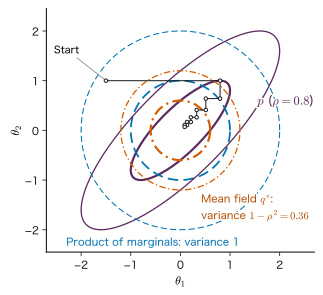
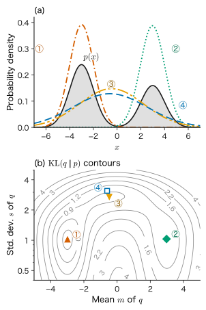
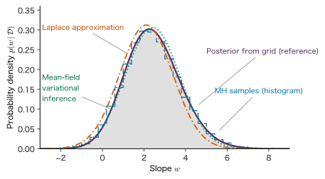

Chapter 20Approximate Inference — Approximating Intractable Integrals
- Of eight samples prepared at different firing temperatures, five became densified. The formula for the posterior distribution of logistic regression can be written in one line, yet neither its mean nor its error bars can be computed by hand. What must we give up to make the computation possible?
- Is the error bar obtained from an approximate posterior distribution wider or narrower than the true error bar? Which approximation distorts the uncertainty, and in which direction?
- The ELBO is used as a measure of how good an approximation is. If the ELBO is large, can we say that the approximation is correct?
The recipe for Bayesian inference is simple. Multiply the prior distribution by the likelihood and divide so that the total area becomes 1; this gives the posterior distribution (Chapter 4, Section 4.3). The number we divide by, however, namely the marginal likelihood (also called the evidence) $p(\data)$ $=\int p(\data\mid\bm{\theta})p(\bm{\theta})\,\dd\bm{\theta}$, is an integral, and it does not reduce to a closed-form expression unless the pair of prior and likelihood has a special form (conjugate). With two parameters we can lay down a grid and integrate numerically, but with 10 parameters the number of grid points reaches $100^{10}=10^{20}$, which not even a computer can finish.
In this chapter we learn two ways to get through this integral by approximation. One is the Laplace approximation, which approximates the neighborhood of the peak of the posterior distribution (the MAP estimate) by a quadratic. The other is variational inference, which searches, by optimization, a tractable family of distributions $q$ for the member closest to the posterior distribution. The key to variational inference is the identity that splits the log marginal likelihood as $\ln p(\data)$ $=\ELBO(q)+\KL(q\,\|\,p(\bm{\theta}\mid\data))$, which has the same form as the variational principle for the free energy in statistical mechanics (the Gibbs–Bogoliubov inequality). An approximation always carries some distortion. Because the Laplace approximation is centered at the peak, it misses the mean of an asymmetric distribution, and the mean-field approximation underestimates the variance in correlated directions. In parameter estimation for materials, this distortion appears directly as an error in the “size of the error bar.”
- You can explain why the integral for the marginal likelihood is difficult, in terms of non-conjugate posterior distributions and the computational cost of grid integration.
- You can derive the Laplace approximation and the approximate formula for the marginal likelihood from the Taylor expansion around the mode of the log posterior distribution, and carry them out by hand for $\mathrm{Beta}(3,9)$ and for logistic regression.
- You can derive $\ln p(\data)=\ELBO(q)+\KL$ line by line, and explain that the ELBO is a lower bound on the log marginal likelihood and that maximizing the ELBO is the same as minimizing the KL.
- You can derive the update formula of the mean-field approximation, $\ln q_j^{*}$ $=\Ex_{i\ne j}[\ln p(\data,\bm{\theta})]+\text{constant}$, and show the underestimation $1/\Lambda_{ii}$ of the variance for a two-dimensional Gaussian distribution.
- You can verify numerically that minimizing $\KL(q\,\|\,p)$ and minimizing $\KL(p\,\|\,q)$ give completely different approximations to a bimodal distribution.
- You can derive the correspondence $\ELBO=-\beta A[q]$ between the ELBO and the Helmholtz free energy.
- You can compare the strengths and weaknesses of the Laplace approximation, variational inference, and MCMC, and judge how the error bars change in parameter estimation for materials.
Sections for the introductory route: This chapter belongs to the detailed route. On the introductory route, read only 20.13 (Summary) and then go on to Chapter 22.
20.1 Why Exact Inference Is Hard — The Integral of the Marginal LikelihoodDetailed Route
20.1.1 The posterior can be written down but not computed
Collect the parameters into $\bm{\theta}\in\R^{M}$ (a column vector of $M$ real numbers). After observing the data $\data$, the posterior distribution is, by Bayes's theorem (Chapter 4, Section 4.3),
\begin{equation} \begin{aligned} p(\bm{\theta}\mid\data)&=\frac{p(\data\mid\bm{\theta})\,p(\bm{\theta})}{p(\data)},\\ p(\data)&=\int_{\R^{M}}p(\data\mid\bm{\theta})\\ &\qquad\times p(\bm{\theta})\,\dd\bm{\theta} \end{aligned} \label{eq:20-evidence} \end{equation}The numerator $p(\data,\bm{\theta})$ $=p(\data\mid\bm{\theta})p(\bm{\theta})$ (the joint distribution) can always be evaluated as a function of $\bm{\theta}$ once the model is fixed. The difficulty lies in the denominator, the marginal likelihood $p(\data)$, which is an $M$-dimensional integral. The posterior mean $\Ex[\bm{\theta}\mid\data]$ $=\int\bm{\theta}\,p(\bm{\theta}\mid\data)\,\dd\bm{\theta}$ and the posterior variance are integrals of the same kind, so if the marginal likelihood cannot be computed, neither can these.
In this book so far, we have been able to compute the marginal likelihood exactly only when the pair of prior distribution and likelihood was conjugate. For the beta distribution and Bernoulli distribution (Chapter 4, Section 4.4), the mean of a Gaussian distribution (Section 4.6), Bayesian linear regression (Chapter 8, Section 8.7), and Gaussian process regression (Chapter 12, Section 12.7), the posterior distribution belongs to the same family as the prior distribution, and the integral was obtained by a formula. The most familiar non-conjugate example is logistic regression.
20.1.2 The running example: logistic regression for the success or failure of densification
We use the following example repeatedly in this chapter (synthetic data for teaching purposes). Normalize the firing temperature $T$ as $s$ $=(T-1300\ ^{\circ}\mathrm{C})/(200\ ^{\circ}\mathrm{C})$ (the same normalization as for Data A in Chapter 8 and elsewhere), and vary it over eight levels $s_n=-0.875,-0.625,\dots,0.875$ (in steps of 0.25). Fire one sample at each level, and set $y_n=1$ (densified) if the relative density reaches 95 % or more, and $y_n=0$ otherwise. The results obtained are
| $s_n$ | −0.875 | −0.625 | −0.375 | −0.125 | 0.125 | 0.375 | 0.625 | 0.875 |
|---|---|---|---|---|---|---|---|---|
| $y_n$ | 0 | 0 | 1 | 0 | 1 | 1 | 1 | 1 |
Since the sample densified at $s=-0.375$ but not at $s=-0.125$, the two classes cannot be separated by a straight line (a threshold at a single point). We take the model to be logistic regression with a slope $w$ and an intercept $b$,
$$ \begin{gathered} p(y_n=1\mid s_n,w,b)=\sigma(ws_n+b),\\ \sigma(a)=\frac{1}{1+e^{-a}} \end{gathered} $$(where $\sigma(a)$ is the sigmoid function; in this chapter we always write it with its argument, to distinguish it from the $\sigma$ of the standard deviation), and place independent prior distributions $w,b\sim\Normal(0,\sigma_w^{2})$, $\sigma_w^{2}=4$, on the parameters $\bm{\theta}$ $=(w,b)^{\tp}\in\R^{2}$. The logarithm of the joint distribution is
\begin{equation} \begin{aligned} &\ln p(\data,\bm{\theta})\\ &\ =\sum_{n=1}^{8}\Bigl[y_n\ln\sigma(ws_n+b)\\ &\qquad+(1-y_n)\\ &\qquad\quad\times\ln\bigl\{1-\sigma(ws_n+b)\bigr\}\Bigr]\\ &\quad-\frac{w^{2}+b^{2}}{2\sigma_w^{2}}\\ &\quad-\ln(2\pi\sigma_w^{2}) \end{aligned} \label{eq:20-logit-joint} \end{equation}The right-hand side can be evaluated immediately at any $(w,b)$. However, the result of integrating $e^{\ln p(\data,\bm{\theta})}$ over $w,b$ can be written neither in elementary functions nor in known special functions. This is because a product of sigmoids and a product of Gaussian functions cannot be combined into a single Gaussian function by a manipulation such as completing the square.
Since this example has only two parameters, we can obtain the posterior distribution to sufficient accuracy by dividing $w$ into a grid of 1301 points and $b$ into a grid of 1001 points, evaluating Eq. \eqref{eq:20-logit-joint} at each point, and summing. The results were $\ln p(\data)=-5.0645$, posterior mean $(\Ex[w],\Ex[b])$ $=(2.424,\ 0.667)$, and posterior standard deviation $(1.338,\ 0.836)$. On the other hand, the maximum point of the posterior distribution (the MAP estimate, found by Newton's method; Chapter 7, Section 7.9) is $(w,b)=(2.107,\ 0.580)$, which is displaced from the posterior mean (Figure 20.1(b)). This is because the posterior distribution has a long tail to the right (the side of large $w$). In the following sections, we take this grid result as the “correct answer” and measure how good each approximation is.
![A two-panel figure, upper and lower. The upper panel shows the eight success-or-failure points of densification against the normalized temperature s, the solid line of the posterior predictive probability computed on the grid, and the dashed line obtained by substituting the MAP estimate. The lower panel shows the 50, 90, and 99 percent contour lines of the posterior distribution of the slope w and the intercept b; they are elongated to the right, and the MAP triangle and the white circle of the posterior mean are displaced from each other.](figs/ch20_fig20-1.svg)
20.1.3 Grid integration breaks down as the dimension grows
The cost of numerical integration on a grid is $G^{M}$ function evaluations, where $G$ is the number of grid points on each axis and $M$ is the number of parameters. If each evaluation sums the likelihoods of $N$ data points, the number of operations is roughly proportional to $NG^{M}$. This exponential growth, in which the cost is multiplied by $G$ each time $M$ increases by 1, is called the curse of dimensionality. In models of materials, it is not unusual to have from a few to several tens of parameters (the coefficients of an interatomic potential, the parameters of a crystal field, or tens of thousands or more for the weights of a neural network). Grid integration is usable only when $M$ is at most about 3 or 4.
Example 20.1: The computational cost of grid integration, and the marginal likelihood of a single observation
(1) Take a grid of $G=100$ points on each axis and $N=1000$ data points, and count the computation of the likelihood of one data point as one operation. For a computer that can perform $10^{9}$ operations per second, estimate the time needed for grid integration with $M=2$ and with $M=10$.
(2) For logistic regression with only a slope, $p(y=1\mid x,w)=\sigma(wx)$, with the prior distribution $w\sim\Normal(0,1)$, suppose we observe $y=1$ just once at $x=1$. Find the marginal likelihood $p(\data)$ $=\int_{-\infty}^{\infty}\sigma(w)\Normal(w\mid0,1)\,\dd w$.
Solution. (1) The number of operations is $NG^{M}$. For $M=2$, it is $1000\times100^{2}=10^{7}$ operations, and $10^{7}/10^{9}$ $=0.01\ \mathrm{s}$. For $M=10$, it is $1000\times100^{10}=10^{23}$ operations, and $10^{23}/10^{9}$ $=10^{14}\ \mathrm{s}$. Since one year is about $3.16\times10^{7}\ \mathrm{s}$, this takes about $3\times10^{6}$ years.
(2) The sigmoid function has the symmetry $\sigma(-w)$ $=\dfrac{1}{1+e^{w}}$ $=\dfrac{e^{-w}}{e^{-w}+1}$ $=1-\sigma(w)$. Since $\Normal(w\mid0,1)$ does not change under $w\to-w$, replacing the variable by $w\to-w$ gives
Hence $p(\data)=1/2$. Except in special cases like this one that can be solved by symmetry, the integral of a product of a sigmoid and a Gaussian function does not take a closed form. With two or more observations, we can no longer even use the symmetry.
The ways of dealing with an intractable integral fall broadly into two. One is to replace the posterior distribution by a tractable function (deterministic approximation; the Laplace approximation and variational inference in this chapter). The other is to draw samples from the posterior distribution and replace the integral by an average (stochastic approximation; the Monte Carlo method of Chapter 21, Section 21.1 and the MCMC of Section 21.6). The former is fast but leaves a bias, while the latter can reduce the bias if we spend enough time but is slow. In Section 20.10 we compare the two on the same example.
20.2 The Laplace Approximation — A Gaussian Distribution Around the ModeDetailed Route
20.2.1 The idea: approximating the logarithm of a peak by a parabola
If a posterior distribution has a single peak and that peak is roughly symmetric, replacing the peak by a Gaussian distribution should not be far off. The logarithm of a Gaussian distribution is a quadratic (a parabola), so it is natural to “expand the log posterior distribution in a Taylor series to second order around the top of the peak.” This is the Laplace approximation (Figure 20.2(b)).
We first derive it for a single variable $\theta$. Use the unnormalized density $\tilde{p}(\theta)\equiv p(\data,\theta)$ and its normalization constant $Z\equiv\int\tilde{p}(\theta)\,\dd\theta$ $=p(\data)$. The posterior distribution can then be written $p(\theta\mid\data)$ $=\tilde{p}(\theta)/Z$. Since $\ln\tilde{p}$ and $\ln p(\theta\mid\data)$ differ only by the constant $\ln Z$, their derivatives with respect to $\theta$ are the same. This is why the Laplace approximation can be carried out without knowing $Z$.
Derivation: The Laplace approximation for one variable
Let $\theta^{*}$ be the point where $\ln\tilde{p}(\theta)$ is maximal (the mode). Since this is the mode of the posterior distribution, $\theta^{*}$ $=\theta_{\mathrm{MAP}}$. Expand to second order in a Taylor series around $\theta^{*}$ (University Mathematics, Chapter 4, Section 4.2):
$$ \begin{aligned} \ln\tilde{p}(\theta)\approx{}&\ln\tilde{p}(\theta^{*})+\left.\diff{\ln\tilde{p}}{\theta}\right|_{\theta^{*}}(\theta-\theta^{*})\\ &+\frac12\left.\frac{\dd^{2}\ln\tilde{p}}{\dd\theta^{2}}\right|_{\theta^{*}}(\theta-\theta^{*})^{2}. \end{aligned} $$Since $\theta^{*}$ is a maximum point, the first derivative is 0. The second derivative at a maximum point is at most 0, so we define the positive number
$$ \Lambda\equiv-\left.\frac{\dd^{2}\ln\tilde{p}(\theta)}{\dd\theta^{2}}\right|_{\theta=\theta^{*}}\ \ (\gt0) $$($\Lambda$ is the “degree of bending” at the top of the peak, called the curvature. As we will see below, it is the reciprocal of the variance of the approximating Gaussian distribution, that is, the precision of Chapter 4, Section 4.6, so we use the same letter $\Lambda$ as for the precision matrix). Then
$$ \ln\tilde{p}(\theta)\approx\ln\tilde{p}(\theta^{*})-\frac{\Lambda}{2}(\theta-\theta^{*})^{2}, $$and exponentiating both sides gives
$$ \tilde{p}(\theta)\approx\tilde{p}(\theta^{*})\exp\!\left[-\frac{\Lambda}{2}(\theta-\theta^{*})^{2}\right]. $$The right-hand side has the form of a Gaussian distribution with mean $\theta^{*}$ and variance $1/\Lambda$. Using the Gaussian integral $\int e^{-\Lambda u^{2}/2}\,\dd u$ $=\sqrt{2\pi/\Lambda}$ (University Mathematics, Chapter 7, Section 7.5), we can also approximate the normalization constant:
$$ Z=\int\tilde{p}(\theta)\,\dd\theta\approx\tilde{p}(\theta^{*})\sqrt{\frac{2\pi}{\Lambda}} . $$Dividing the approximated $\tilde{p}$ by this $Z$ cancels $\tilde p(\theta^{*})$ and leaves $\sqrt{\Lambda/(2\pi)}\exp[-\Lambda(\theta-\theta^{*})^{2}/2]$ $=\Normal(\theta\mid\theta^{*},\Lambda^{-1})$.
∎
For several variables $\bm{\theta}\in\R^{M}$ the same procedure works: the second derivative is replaced by the Hessian matrix, and the Gaussian integral by the multidimensional Gaussian integral $\int\exp(-\tfrac12\bm{u}^{\tp}\bm{\Lambda}\bm{u})\,\dd\bm{u}$ $=(2\pi)^{M/2}\abs{\bm{\Lambda}}^{-1/2}$ (for the sign of a quadratic form, see University Mathematics, Chapter 6, Section 6.6).
Formula 20.1: The Laplace approximation
Let $\bm{\theta}_{\mathrm{MAP}}\in\R^{M}$ be the maximum point of $\ln p(\data,\bm{\theta})$, and let $\bm{\Lambda}\in\R^{M\times M}$ be the matrix obtained by changing the sign of the Hessian matrix there (assume it is symmetric and positive definite; it becomes the precision matrix of the approximating distribution). Then the approximation $q(\bm{\theta})$ of the posterior distribution and the approximation of the marginal likelihood are given by the following Eqs. \eqref{eq:20-laplace-q} and \eqref{eq:20-laplace-Z}.
Here $\nabla\nabla$ denotes the $M\times M$ matrix of second partial derivatives $\partial^{2}/\partial\theta_i\partial\theta_j$. $\bm{\Lambda}$ is the same as the Hessian matrix of $-\ln p(\data,\bm{\theta})$ ($\ln Z$ does not depend on $\bm{\theta}$). If the prior distribution is $\Normal(\bm{0},\sigma_w^{2}\bm{I})$, then $\bm{\Lambda}$ is the “Hessian matrix of the likelihood (with its sign changed)” plus $\bm{I}/\sigma_w^{2}$. The second and third terms on the right-hand side of Eq. \eqref{eq:20-laplace-Z} are the logarithm of the “volume” of the peak, and they play the same role as $-\tfrac12\ln\abs{\cdot}$, which also appeared in the marginal likelihood of Chapter 12 (Section 12.7).
20.2.2 Hand calculation: approximating $\mathrm{Beta}(3,9)$ by a Gaussian distribution
We try the Laplace approximation on a distribution whose exact answer is known. Consider the case where the posterior distribution of a success rate $x\in(0,1)$ is $\mathrm{Beta}(3,9)$. For example, this is the posterior distribution after 2 successes in 10 trials under the uniform prior distribution $\mathrm{Beta}(1,1)$ (Chapter 4, Section 4.4). For the beta distribution, see Chapter 3, Section 3.8.
Example 20.2: The Laplace approximation of $\mathrm{Beta}(3,9)$
For $\tilde{p}(x)=x^{2}(1-x)^{8}$ ($0\lt x\lt1$), find the Laplace approximation, and find (1) the mode $x^{*}$ and the curvature $\Lambda$, (2) the mean and variance of the approximation and the true mean and variance, (3) the approximation of the normalization constant and its true value $Z=B(3,9)$, and (4) the probability that the approximating Gaussian distribution places on $x\lt0$.
Solution. (1) $\ln\tilde{p}=2\ln x+8\ln(1-x)$. Setting the first derivative $\dfrac{2}{x}-\dfrac{8}{1-x}=0$ gives $2(1-x)=8x$, so $x^{*}=0.2$. The second derivative is $-\dfrac{2}{x^{2}}-\dfrac{8}{(1-x)^{2}}$, so
$$ \Lambda=\frac{2}{0.2^{2}}+\frac{8}{0.8^{2}}=50+12.5=62.5 . $$(2) The approximation is $q(x)$ $=\Normal(x\mid0.2,\ 1/62.5)$. Its mean is 0.2 and its variance is $1/62.5=0.016$ (standard deviation 0.1265). The true values follow from the mean $a/(a+b)$ and variance $ab/[(a+b)^{2}(a+b+1)]$ of $\mathrm{Beta}(a,b)$: the mean is $3/12=0.25$ and the variance is $27/(144\times13)$ $=27/1872$ $=0.014423$ (standard deviation 0.1201).
(3) $\ln\tilde{p}(x^{*})$ $=2\ln0.2+8\ln0.8$ $=-3.2189-1.7851$ $=-5.0040$. $\tfrac12\ln(2\pi/62.5)$ $=\tfrac12\ln0.10053$ $=-1.1486$. Hence $\ln Z\approx-6.1527$. The true value is $B(3,9)$ $=\dfrac{2!\,8!}{11!}$ $=\dfrac{1}{495}$, so $\ln Z=-\ln495=-6.2046$. As a ratio of $Z$ values, $e^{-6.1527+6.2046}=1.053$, a 5 % overestimate.
(4) Under $q$, the probability of $x\lt0$ is the cumulative distribution function at the standardized value $z=(0-0.2)/0.1265=-1.581$, namely $\Phi(-1.581)=0.0569$. About 5.7 % of the probability is placed on negative values, which are impossible for a success rate.
![A figure in two stacked panels. The upper panel overlays the density of Beta(3,9) (solid line and gray filled area), the Gaussian distribution of the Laplace approximation (dash-dotted line), and the Gaussian distribution with matched mean and variance (dashed line). The Laplace approximation is centered at the mode 0.2 and places probability also on negative x. The lower panel compares the difference of the log densities with its quadratic approximation, a parabola; away from the mode 0.2, on the right side, the parabola falls below the log density.](figs/ch20_fig20-2.svg)
Figure 20.2 shows the character of the Laplace approximation. Because only the position of the top and its degree of bending are matched, (i) the center is at the mode, not at the mean. $\mathrm{Beta}(3,9)$ has a long tail to the right, so the center is at 0.2, to the left of the mean 0.25. (ii) The variance is also determined by the local bending at the top and does not reflect the heaviness of the tails. (iii) A Gaussian distribution places probability on all real numbers, so for a distribution whose support (the range where the probability is positive) is limited to $0\lt x\lt1$, probability leaks outside the support.
Example 20.3: Laplace approximation of logistic regression with one observation
Apply the Laplace approximation to the posterior distribution $p(w\mid\data)\propto\sigma(w)\Normal(w\mid0,1)$ of Example 20.1 (2). (1) Perform two steps of Newton's method starting from $w_0=0$ to find the MAP estimate. (2) Find the curvature $\Lambda$ and the standard deviation of the approximation. (3) Approximate the marginal likelihood by Eq. \eqref{eq:20-laplace-Z} and compare it with the exact value $1/2$.
Solution. $\ln\tilde{p}(w)$ $=\ln\sigma(w)-\tfrac12w^{2}-\tfrac12\ln2\pi$. Since $\diff{}{w}\ln\sigma(w)$ $=1-\sigma(w)$ (this is the derivative of the sigmoid, $\sigma'=\sigma(1-\sigma)$, in Chapter 9, Section 9.3 divided by $\sigma$),
$$ \begin{aligned} g(w)&\equiv\diff{\ln\tilde{p}}{w}=1-\sigma(w)-w,\\ -\frac{\dd^{2}\ln\tilde{p}}{\dd w^{2}}&=\sigma(w)\bigl(1-\sigma(w)\bigr)+1 . \end{aligned} $$(1) The Newton update is $w\leftarrow w+g(w)\big/\bigl[\sigma(w)(1-\sigma(w))+1\bigr]$. For $w_0=0$: $\sigma=0.5$, $g=0.5$, and the denominator is $1.25$, so $w_1=0.4$. For $w_1=0.4$: $\sigma(0.4)=0.59869$, $g=1-0.59869-0.4=0.00131$, and the denominator is $0.59869\times0.40131+1$ $=1.24026$, so $w_2$ $=0.4+0.00131/1.24026$ $=0.40106$. The change in the next update is about $10^{-8}$, so $w^{*}=0.4011$.
(2) Substituting $\sigma(w^{*})=0.59894$ gives $\Lambda$ $=0.59894\times0.40106+1$ $=1.2402$. The standard deviation of the approximation is $1/\sqrt{1.2402}=0.898$. (The true posterior mean computed on a grid is 0.413 and the standard deviation is 0.911, so the approximation is slightly smaller.)
(3) $\tilde{p}(w^{*})\sqrt{2\pi/\Lambda}$ $=\sigma(w^{*})\dfrac{e^{-w^{*2}/2}}{\sqrt{2\pi}}\sqrt{\dfrac{2\pi}{\Lambda}}$ $=\dfrac{0.59894\times e^{-0.08042}}{\sqrt{1.2402}}$ $=\dfrac{0.59894\times0.92273}{1.11364}$ $=0.4963$. This is 0.7 % smaller than the exact value 0.5.
For the running example (Table 20.1), the same procedure gives the Newton convergence point $\bm{\theta}_{\mathrm{MAP}}$ $=(2.107,\ 0.580)^{\tp}$ and
$$ \begin{aligned} \bm{\Lambda}&=\begin{pmatrix}\sum_n r_n s_n^{2}+\sigma_w^{-2} & \sum_n r_n s_n\\ \sum_n r_n s_n & \sum_n r_n+\sigma_w^{-2}\end{pmatrix}\\ &=\begin{pmatrix}0.6332&-0.1872\\-0.1872&1.6919\end{pmatrix} \end{aligned} $$(where $r_n=\hat{y}_n(1-\hat{y}_n)$ and $\hat{y}_n$ $=\sigma(w_{\mathrm{MAP}}s_n+b_{\mathrm{MAP}})$; this is the Hessian matrix of Chapter 9, Section 9.3 plus $\bm{I}/\sigma_w^{2}$ from the prior distribution). From the square roots of the diagonal components of $\bm{\Lambda}^{-1}$, the standard deviations of the approximation are 1.278 for $w$ and 0.782 for $b$. These are about 5 % smaller than the grid values 1.338 and 0.836, and the center is also shifted to the left of the posterior mean $(2.424,0.667)$. From Eq. \eqref{eq:20-laplace-Z}, the approximation of the marginal likelihood is $\ln p(\data)\approx-5.118$ (on the grid, $-5.0645$).
20.2.3 Limitations of the Laplace approximation
- Skewness (asymmetry): Because the center is at the mode, probability on the long-tailed side is missed. For $\mathrm{Beta}(3,9)$ the mean was underestimated, 0.2 instead of 0.25, and in the running example $w$ was underestimated, 2.11 instead of 2.42.
- Multimodality: Only one peak is expanded. If there are two peaks, the result depends on which peak is chosen for the expansion, and the probability of the other peak is lost entirely (numerical values are given in the bimodal example of Section 20.7).
- Boundaries: For variables with limited support (a success rate $0\lt x\lt1$, a variance or concentration $\gt0$), the Gaussian distribution places probability outside the support. Then $\KL(q\,\|\,p)$ becomes infinite (where $p=0$ we have $q\gt0$, so $\ln(q/p)=\infty$; Section 20.7). The remedy is to transform to a variable whose support is all the real numbers before approximating (for a success rate, the logit $u=\ln[x/(1-x)]$; for a positive quantity, $\ln x$; Exercise 20.2, Section 20.11).
- Dependence on the choice of variable: A density changes its shape under a change of variables (Chapter 2, Section 2.6), so both the position of the mode and the quality of the approximation depend on which variable is used for the expansion.
Conversely, with a lot of data the posterior distribution approaches a Gaussian distribution (a property known as the Bernstein–von Mises theorem; it holds under conditions such as the model being smooth and the true parameter lying inside the support of the prior distribution; here we only state it and leave the proof to Chapter 10 of van der Vaart (1998)), so the Laplace approximation becomes better. The idea of approximating posterior moments with high accuracy by the Laplace approximation begins with Tierney & Kadane (1986).
In the following simulator, we check numerically how the Laplace approximation differs from the true distribution. The target of the simulator is one-dimensional; the variable on the horizontal axis is written $x$, the unnormalized density $\tilde{p}(x)$, and the normalization constant $Z$. These correspond to $\theta$, $p(\data,\theta)$, and $p(\data)$ of the main text, respectively. To show the correct answer, the simulator computes $Z$ by numerical integration on a grid (Simpson's rule with 4000 intervals). In actual inference, $Z$ cannot be computed, which is why approximations are used; this is a simplification made by the simulator.
Simulator 20.1: Comparing the Laplace approximation with the true distribution
This simulator replaces a one-dimensional target distribution by the Laplace approximation and two kinds of Gaussian approximation, and lets you check the approximate values of the mean, variance, KL divergence, and normalization constant side by side with the true values.
Open in a separate window at full size →
Operate and Observe
- Keeping the defaults as they are right after opening (target distribution “skewed unimodal Beta”, Beta with $a=3$, $b=9$), read the columns “$p$ (true)” and “Laplace” of the table “Approximate values” → the means are 0.2500 and 0.2000, and the variances are 0.01442 and 0.01600. These are the same values as in Example 20.2 (2). In the upper figure, observe that the Laplace approximation (dashed line with ▲) spills into the hatched range $x\lt0$.
- In the Laplace KL($q$‖$p$) entry of the same table → it shows “∞※”, and the note under the table says “$q$ places probability 0.0569 outside $0\lt x\lt1$, so KL($q$‖$p$) = ∞”. Compare the 0.0569 with that of Example 20.2 (4).
- Set “$q$ to put into the formula” to “Laplace” and read “Putting the current numbers into the formula” → the mode $x^{*}=0.2$, $\Lambda=2/0.2^{2}+8/0.8^{2}=62.5$, and $\ln Z\approx-6.1527$ appear alongside $\ln Z=-6.2046$ computed on the grid. Compare with Eq. \eqref{eq:20-laplace-Z} ($M=1$).
- Set both $a$ and $b$ of the beta distribution to 10 (a symmetric unimodal case) → the Laplace mean is 0.5000, the same as the true mean, but the variance is 0.01389, larger than the true 0.01190. The approximation of $\ln Z$ is $-13.696$ (the true value is $-13.736$).
Questions After Operating
- In Step 1, why is the mean of the Laplace approximation smaller than the true mean?
Sample answers
The center of the Laplace approximation is the mode $x^{*}=(a-1)/(a+b-2)=0.2$, not the mean $a/(a+b)=0.25$. $\mathrm{Beta}(3,9)$ has a long tail to the right, so the mean lies to the right of the mode. The Laplace approximation looks only at the position of the top and its degree of bending, so it misses the weight of the tail.
- In Step 4, for the symmetric $\mathrm{Beta}(10,10)$, why is the variance larger than the true value even though the means agree?
Sample answers
The density of $\mathrm{Beta}(10,10)$ is $x^{9}(1-x)^{9}$, which drops to 0 at the ends $x=0$ and $1$, so its tails are lighter than those of a Gaussian distribution with the same curvature at the top (away from $x=0.5$ it falls faster than the parabola). The variance of the Laplace approximation, $1/\Lambda=1/72$, is determined only by the curvature at the top and does not reflect the lightness of the tails, so it is larger than the true variance $100/(400\times21)=0.01190$. Even for a symmetric distribution, unless it is a Gaussian distribution, the variance of the Laplace approximation generally does not agree with the true value.
20.3 The Idea of Variational Inference — Splitting the Log Marginal Likelihood into the ELBO and the KLDetailed Route
20.3.1 Turning approximation into an “optimization problem”
The Laplace approximation built a Gaussian distribution from information at a single point (the mode). How can we look at the whole distribution and choose the “closest” approximation? Variational inference first fixes a collection of tractable distributions (a family) $\mathcal{Q}$, and then searches within it for the $q$ closest to the posterior distribution. As the measure of closeness we use the KL divergence (Chapter 5, Section 5.4):
$$ \begin{gathered} q^{*}=\argmin_{q\in\mathcal{Q}}\ \KL\bigl(q(\bm{\theta})\,\|\,p(\bm{\theta}\mid\data)\bigr),\\ \KL(q\,\|\,p)=\int q(\bm{\theta})\ln\frac{q(\bm{\theta})}{p(\bm{\theta}\mid\data)}\,\dd\bm{\theta} . \end{gathered} $$The difficulty here is that the KL contains $p(\bm{\theta}\mid\data)$, which we cannot compute. However, by the following identity, minimizing $\KL$ is equivalent to maximizing a quantity we can compute (the ELBO). The name “variational” comes from the calculus of variations, which searches for the maximum of a functional by changing the function $q$ a little at a time.
20.3.2 Derivation of the identity
Derivation: $\ln p(\data)$ $=\ELBO(q)+\KL(q\,\|\,p(\bm{\theta}\mid\data))$
Let $q(\bm{\theta})$ be an arbitrary probability density (so $\int q\,\dd\bm{\theta}=1$). Since $\ln p(\data)$ is a constant independent of $\bm{\theta}$, taking the expectation (expected value) with respect to $q$ does not change it:
$$ \ln p(\data)=\int q(\bm{\theta})\ln p(\data)\,\dd\bm{\theta}=\Ex_{q}\bigl[\ln p(\data)\bigr]. $$From the product rule $p(\data,\bm{\theta})$ $=p(\bm{\theta}\mid\data)\,p(\data)$, substitute $p(\data)$ $=p(\data,\bm{\theta})/p(\bm{\theta}\mid\data)$:
$$ \ln p(\data)=\Ex_{q}\!\left[\ln\frac{p(\data,\bm{\theta})}{p(\bm{\theta}\mid\data)}\right]. $$Multiply the numerator and the denominator inside the logarithm by the same $q(\bm{\theta})$ (the value does not change):
$$ \ln p(\data)=\Ex_{q}\!\left[\ln\frac{p(\data,\bm{\theta})}{q(\bm{\theta})}\cdot\frac{q(\bm{\theta})}{p(\bm{\theta}\mid\data)}\right]. $$Split the logarithm of the product into a sum, and use the linearity of expectation:
$$ \begin{aligned} \ln p(\data)={}&\underbrace{\Ex_{q}\!\left[\ln\frac{p(\data,\bm{\theta})}{q(\bm{\theta})}\right]}_{\ELBO(q)}\\ &+\underbrace{\Ex_{q}\!\left[\ln\frac{q(\bm{\theta})}{p(\bm{\theta}\mid\data)}\right]}_{\KL(q\,\|\,p(\bm{\theta}\mid\data))}. \end{aligned} $$The second term is exactly the definition of the KL divergence.
∎
This decomposition tells us three things.
- The ELBO is a lower bound: The KL is always at least 0 (Gibbs's inequality; Chapter 5, Section 5.4), so $\ELBO(q)\le\ln p(\data)$. Equality holds only when $q=p(\bm{\theta}\mid\data)$. ELBO stands for evidence lower bound (evidence is another name for the marginal likelihood).
- The ELBO can be computed: Only $p(\data,\bm{\theta})$ and $q$ appear in $\ELBO(q)$, and the values of both can be computed. If we choose $q$ to be tractable, the expectation $\Ex_q$ can be computed analytically; even if not, it can be computed from samples drawn from $q$ (Section 20.9).
- Maximizing the ELBO = minimizing the KL: The left-hand side $\ln p(\data)$ is a constant independent of $q$, so if we change $q$ so that the ELBO increases by 1, the KL decreases by exactly 1.
The same inequality $\ELBO\le\ln p(\data)$ also follows in one line from Jensen's inequality ($\Ex[\ln X]\le\ln\Ex[X]$ for the concave function $\ln$; Exercise 20.3). However, that derivation does not show that the difference is the KL. The statement for the EM algorithm that “the log-likelihood is the sum of the ELBO and the KL” (Chapter 17, Section 17.7) is this decomposition applied to the latent variables.
Example 20.4: Counting the ELBO and the KL with two hypotheses
Consider whether the main phase of a powder is phase 1 or phase 2 ($\theta\in\{1,2\}$). The prior probabilities are $p(\theta=1)=p(\theta=2)=0.5$, and the likelihoods of the observation $\data$ of a certain diffraction peak are $p(\data\mid\theta=1)=0.2$ and $p(\data\mid\theta=2)=0.05$ (numbers for teaching purposes). (1) Find $p(\data)$ and the posterior distribution. (2) For $q=(0.5,0.5)$ and $q=(0.9,0.1)$, find the ELBO and the KL, and verify that their sum equals $\ln p(\data)$.
Solution. (1) The joint probabilities are $p(\data,\theta$ $=1)$ $=0.5\times0.2$ $=0.1$ and $p(\data,\theta$ $=2)$ $=0.5\times0.05$ $=0.025$. Summing gives $p(\data)=0.125$ and $\ln p(\data)=-2.0794$. The posterior distribution is $(0.1,\ 0.025)/0.125$ $=(0.8,\ 0.2)$.
(2) In the discrete case, $\ELBO(q)$ $=\sum_{\theta}q(\theta)\ln\dfrac{p(\data,\theta)}{q(\theta)}$ and $\KL$ $=\sum_{\theta}q(\theta)\ln\dfrac{q(\theta)}{p(\theta\mid\data)}$.
For $q=(0.5,0.5)$: $\ELBO$ $=0.5\ln\dfrac{0.1}{0.5}+0.5\ln\dfrac{0.025}{0.5}$ $=0.5(-1.6094)+0.5(-2.9957)$ $=-2.3026$. $\KL$ $=0.5\ln\dfrac{0.5}{0.8}+0.5\ln\dfrac{0.5}{0.2}$ $=0.5(-0.4700)+0.5(0.9163)$ $=0.2231$. The sum is $-2.0794$.
For $q=(0.9,0.1)$: $\ELBO$ $=0.9\ln\dfrac{0.1}{0.9}+0.1\ln\dfrac{0.025}{0.1}$ $=0.9(-2.1972)+0.1(-1.3863)$ $=-2.1161$. $\KL$ $=0.9\ln\dfrac{0.9}{0.8}+0.1\ln\dfrac{0.1}{0.2}$ $=0.9(0.1178)+0.1(-0.6931)$ $=0.0367$. The sum is $-2.0794$.
For both $q$ the sum is the same $\ln p(\data)$, and $q=(0.9,0.1)$, which is closer to the posterior distribution, has the larger ELBO and the smaller KL (Figure 20.3).
20.4 Two Forms of the ELBO — Fit to the Data and Departure from the PriorDetailed Route
If we split $\ln p(\data,\bm{\theta})$ in the definition of the ELBO, Eq. \eqref{eq:20-decomp}, we obtain two ways of looking at it.
Derivation: Two forms of the ELBO
(i) The second term $-\Ex_q[\ln q]$ is the entropy $H[q]$ of $q$ (Chapter 5, Section 5.2; for a continuous variable, the differential entropy, Section 5.3). Hence
$$ \ELBO(q)=\Ex_{q}[\ln p(\data,\bm{\theta})]+H[q]. $$(ii) Substitute the product rule $\ln p(\data,\bm{\theta})$ $=\ln p(\data\mid\bm{\theta})+\ln p(\bm{\theta})$ and pair the prior term with the terms in $q$:
$$ \begin{aligned} \ELBO(q)={}&\Ex_{q}[\ln p(\data\mid\bm{\theta})]\\ &+\Ex_{q}[\ln p(\bm{\theta})]-\Ex_{q}[\ln q(\bm{\theta})]\\ ={}&\Ex_{q}[\ln p(\data\mid\bm{\theta})]-\Ex_{q}\!\left[\ln\frac{q(\bm{\theta})}{p(\bm{\theta})}\right]\\ ={}&\Ex_{q}[\ln p(\data\mid\bm{\theta})]\\ &-\KL\bigl(q(\bm{\theta})\,\|\,p(\bm{\theta})\bigr). \end{aligned} $$∎
The second form shows that maximizing the ELBO is a tug-of-war between two demands. The first term (the expected log-likelihood) wants to concentrate $q$ on the values of $\bm{\theta}$ that explain the data well, while the second term pulls $q$ back so that it does not move too far from the prior distribution. The more data there are, the stronger the first term becomes, and the narrower $q$ becomes. Because sign mix-ups are easy to make, we summarize them in a table.
| Form | Term | Sign in the ELBO | What $q$ wants to do to make that term larger |
|---|---|---|---|
| (i) | $\Ex_q[\ln p(\data,\bm{\theta})]$ | $+$ | Concentrate where the joint distribution is large (near the MAP estimate) |
| $H[q]=-\Ex_q[\ln q]$ | $+$ | Spread out (increase the entropy) | |
| (ii) | $\Ex_q[\ln p(\data\mid\bm{\theta})]$ | $+$ | Concentrate where the likelihood is large (data fit) |
| $\KL(q\,\|\,p(\bm{\theta}))$ | $-$ | Stay close to the prior distribution | |
| Identity | $\KL(q\,\|\,p(\bm{\theta}\mid\data))$ | $\ln p(\data)=\ELBO+\KL$ | Raising the ELBO means lowering this KL divergence |
Form (i) is a balance between a “force that wants to concentrate” and a “force that wants to spread out”; in Section 20.8 we will match it with the balance between “energy” and “entropy” in statistical mechanics. Form (ii) is used in the variational autoencoder (Section 20.9) as “data fit of the reconstruction − departure from the prior.”
Example 20.5: The mean of a Gaussian distribution: maximizing the ELBO reproduces the exact posterior distribution
Suppose the measurements are $x_n\sim\Normal(\mu,\sigma^{2})$ (with $\sigma^{2}=1$ known), the prior distribution is $\mu\sim\Normal(\mu_0,\sigma_0^{2})$ ($\mu_0=0$, $\sigma_0^{2}=1$), and we obtain the data $\data=\{0.5,\,1.0,\,1.5\}$ ($N=3$) (numbers for teaching purposes). Let the family of approximations be the Gaussian distributions $q(\mu)$ $=\Normal(\mu\mid m,s^{2})$. (1) Write $\ELBO(m,s)$ using the second form, Eq. \eqref{eq:20-elbo2}. (2) Find the $m,s^{2}$ that maximize the ELBO, and compare them with the exact posterior distribution of Chapter 4, Section 4.6. (3) Find the maximum value of the ELBO.
Solution. (1) We have $\ln p(\data\mid\mu)$ $=-\dfrac N2\ln(2\pi\sigma^{2})-\dfrac{1}{2\sigma^{2}}\sum_n(x_n-\mu)^{2}$. Under $q$, $\Ex_q[(x_n-\mu)^{2}]$ $=(x_n-m)^{2}+s^{2}$ (split $\mu=m+(\mu-m)$; the expectation of the cross term is 0), so
$$ \begin{aligned} &\Ex_{q}[\ln p(\data\mid\mu)]\\ &\ =-\frac N2\ln(2\pi\sigma^{2})\\ &\qquad-\frac{1}{2\sigma^{2}}\Bigl[\sum_n(x_n-m)^{2}+Ns^{2}\Bigr]. \end{aligned} $$From the KL divergence between two one-variable Gaussian distributions (Chapter 5, Section 5.6), $\KL(q\,\|\,p(\mu))$ $=\ln\dfrac{\sigma_0}{s}+\dfrac{s^{2}+(m-\mu_0)^{2}}{2\sigma_0^{2}}-\dfrac12$. The ELBO is the difference of these two.
(2) Take the partial derivative with respect to $m$ and set it to 0: $\dfrac{1}{\sigma^{2}}\sum_n(x_n-m)-\dfrac{m-\mu_0}{\sigma_0^{2}}$ $=0$, that is, $m\Bigl(\dfrac{N}{\sigma^{2}}+\dfrac{1}{\sigma_0^{2}}\Bigr)$ $=\dfrac{N\bar{x}}{\sigma^{2}}+\dfrac{\mu_0}{\sigma_0^{2}}$. Take the partial derivative with respect to $s$ and set it to 0: $-\dfrac{Ns}{\sigma^{2}}+\dfrac1s-\dfrac{s}{\sigma_0^{2}}$ $=0$, that is, $\dfrac{1}{s^{2}}$ $=\dfrac{N}{\sigma^{2}}+\dfrac{1}{\sigma_0^{2}}$. These are the same as the formulas for $\mu_N$ and $\sigma_N^{2}$ of the exact posterior distribution in Chapter 4. Numerically, $1/s^{2}=3+1=4$ gives $s^{2}=0.25$, and $m$ $=0.25\times(3\times1.0+0)$ $=0.75$.
(3) $\sum_n(x_n-0.75)^{2}$ $=0.0625+0.0625+0.5625$ $=0.6875$. The expected log-likelihood is $-\tfrac32\ln2\pi-\tfrac12(0.6875+3\times0.25)$ $=-2.7568-0.7188$ $=-3.4756$. The KL divergence is $\KL$ $=\ln\dfrac{1}{0.5}+\dfrac{0.25+0.5625}{2}-\dfrac12$ $=0.6931+0.4063-0.5$ $=0.5994$. Thus ELBO $=-3.4756-0.5994=-4.0750$. The exact $\ln p(\data)$ (the log density of $\bm{x}\sim\Normal(\bm{0},\sigma^{2}\bm{I}+\sigma_0^{2}\bm{1}\bm{1}^{\tp})$) is also $-4.0750$, in agreement. If the true posterior distribution lies within the family, $\KL=0$ is reached and the ELBO equals the log marginal likelihood.
20.5 The Mean-Field Approximation — Optimizing One Factor at a TimeDetailed Route
20.5.1 The factorization assumption
The family most often used in variational inference splits the parameters into several groups $\bm{\theta}$ $=(\bm{\theta}_1,\dots,\bm{\theta}_K)$ and assumes that the groups are independent of one another:
\begin{equation} q(\bm{\theta})=\prod_{i=1}^{K}q_i(\bm{\theta}_i) \label{eq:20-mf} \end{equation}This is called the mean-field approximation. We do not assume a form for each $q_i$ (such as a Gaussian distribution); the only thing assumed is “independence.” The name comes from the approximation in statistical mechanics that replaces the influence of the other spins on a single spin by an “average field” (Section 20.8).
20.5.2 Derivation of the optimal factor
Derivation: $\ln q_j^{*}(\bm{\theta}_j)$ $=\Ex_{i\ne j}[\ln p(\data,\bm{\theta})]+\text{constant}$
Fix all factors other than $q_j$ and regard the ELBO as a function of $q_j$. Since $\ln q=\sum_i\ln q_i$, the second term of the ELBO is
$$ -\Ex_{q}[\ln q]=-\Ex_{q_j}[\ln q_j]-\sum_{i\ne j}\Ex_{q_i}[\ln q_i], $$and the sum on the right-hand side does not depend on $q_j$. For the first term, we take the expectation over the factors other than $q_j$ first (interchanging the order of integration):
$$ \begin{aligned} &\Ex_{q}[\ln p(\data,\bm{\theta})]\\ &\ =\int q_j(\bm{\theta}_j)\underbrace{\left[\int\ln p(\data,\bm{\theta})\prod_{i\ne j}q_i\,\dd\bm{\theta}_i\right]}_{\Ex_{i\ne j}[\ln p(\data,\bm{\theta})]}\dd\bm{\theta}_j . \end{aligned} $$The expression inside the brackets is a function of $\bm{\theta}_j$ only. We therefore define the normalized distribution $\tilde{q}_j(\bm{\theta}_j)\equiv\exp\bigl(\Ex_{i\ne j}[\ln p(\data,\bm{\theta})]\bigr)/C_j$ ($C_j$ is the constant that makes $\int\tilde{q}_j\,\dd\bm{\theta}_j$ $=1$). Substituting $\Ex_{i\ne j}[\ln p]$ $=\ln\tilde{q}_j+\ln C_j$ gives
$$ \begin{aligned} \ELBO&=\int q_j\ln\tilde{q}_j\,\dd\bm{\theta}_j-\int q_j\ln q_j\,\dd\bm{\theta}_j+\text{constant}\\ &=-\KL\bigl(q_j\,\|\,\tilde{q}_j\bigr)+\text{constant}. \end{aligned} $$Here the “constant” is a quantity that does not depend on $q_j$ ($\ln C_j$ and the entropies for $i\ne j$). The KL divergence is nonnegative and equals 0 when $q_j=\tilde{q}_j$, so the $q_j$ that maximizes the ELBO is $q_j^{*}=\tilde{q}_j$.
∎
The $\Ex_{i\ne j}$ on the right-hand side means “average over the factors $q_i$ other than the $j$th.” The constant is fixed by normalization, so in practice it suffices to read off the form of the dependence on $\bm{\theta}_j$ on the right-hand side (a Gaussian distribution if it is quadratic, and so on). The formula can be used as long as $\ln p(\data,\bm{\theta})$ can be computed, and $p(\data)$ is not needed.
The right-hand side of Eq. \eqref{eq:20-mf-opt} depends on the other factors, so it cannot be solved in one step. Instead, for $j=1,\dots,K$ in turn, we update $q_j$ with the others fixed, and repeat this (coordinate ascent; it is sometimes called CAVI). Each update does not lower the ELBO (because it maximizes over that $q_j$), so the ELBO increases monotonically and converges. However, the limit is a local maximum and can depend on the starting point (Example 20.6, Section 20.7).
Example 20.6: Approximating two binary variables by the mean field
Suppose the distribution of two binary variables $\theta_1,\theta_2\in\{0,1\}$ is $p(0,0)=p(1,1)=0.45$, $p(0,1)=p(1,0)=0.05$ (two strongly coordinated variables; numbers for teaching purposes). Approximate it by the mean field $q(\theta_1,\theta_2)$ $=q_1(\theta_1)q_2(\theta_2)$, and write $a\equiv q_1(1)$, $b\equiv q_2(1)$. (1) Derive the update formula for $a$ from Eq. \eqref{eq:20-mf-opt}. (2) Starting from $b=0.7$, update $a$ once. (3) Compare the limit of the iteration, and the value of $\KL(q\,\|\,p)$ there, with those for $a=b=0.5$ (the uniform $q$).
Solution. (1) We have $\ln q_1^{*}(\theta_1)$ $=\sum_{\theta_2}q_2(\theta_2)\ln p(\theta_1,\theta_2)+\text{constant}$. Taking the difference between $\theta_1=1$ and $\theta_1=0$ eliminates the constant:
$$ \begin{aligned} \ln\frac{a}{1-a}&=b\ln\frac{0.45}{0.05}+(1-b)\ln\frac{0.05}{0.45}\\ &=(2b-1)\ln9 . \end{aligned} $$Hence $a$ $=\sigma\bigl((2b-1)\ln9\bigr)$ ($\sigma(\cdot)$ is the sigmoid function). By symmetry, $b$ $=\sigma\bigl((2a-1)\ln9\bigr)$.
(2) $(2\times0.7-1)\ln9$ $=0.4\times2.1972$ $=0.8789$. Since $e^{0.8789}=2.408$, we get $a=2.408/3.408=0.7066$.
(3) Repeating the update converges to $a=b=0.75$ (if $a=0.75$, then $(2a-1)\ln9=0.5\ln9=\ln3$ and $\sigma(\ln3)=3/4$, so the two balance). Then $q(1,1)=0.5625$, $q(0,0)=0.0625$, $q(0,1)=q(1,0)=0.1875$, and $\KL(q\,\|\,p)=0.498$. For the uniform $q$ ($a=b=0.5$; this too is a fixed point of the update formula), $\KL=0.511$, so the approximation that leans toward one of the states, $(1,1)$, has the smaller KL divergence. Starting from $b=0.3$, the iteration converges to the symmetric solution $a=b=0.25$. Although the true distribution gives equal weight to $(0,0)$ and $(1,1)$, the mean-field approximation chooses one of them. This “symmetry breaking” is connected with the property of “settling on one peak” in Section 20.7 and with the mean-field theory of ferromagnets in Section 20.8.
20.6 Example: Mean-Field Approximation of a Correlated Two-Dimensional Gaussian DistributionDetailed Route
We examine the character of the mean-field approximation using an example that can be solved analytically. Let the target be a two-dimensional Gaussian distribution $p(\bm{\theta})$ $=\Normal(\bm{\theta}\mid\bm{\mu},\bm{\Lambda}^{-1})$. Here $\bm{\theta}$ $=(\theta_1,\theta_2)^{\tp}$, $\bm{\mu}\in\R^{2}$ is the mean, and $\bm{\Lambda}\in\R^{2\times2}$ is the inverse matrix of the covariance matrix (the precision matrix), which is symmetric and positive definite. Using the precision matrix, the log density can be written simply:
$$ \begin{aligned} \ln p(\bm{\theta})={}&-\frac12\Lambda_{11}(\theta_1-\mu_1)^{2}\\ &-\Lambda_{12}(\theta_1-\mu_1)(\theta_2-\mu_2)\\ &-\frac12\Lambda_{22}(\theta_2-\mu_2)^{2}+\text{const}. \end{aligned} $$(If this $p$ appeared as a posterior distribution in actual inference, no mean-field approximation would be needed; but because we know the correct answer, we can measure the distortion of the approximation exactly.)
Derivation: The optimal factor $q_1^{*}$
Set $j=1$ in Eq. \eqref{eq:20-mf-opt} and take the expectation with respect to $q_2$. Terms that do not contain $\theta_1$ go into the constant. Writing the mean of $q_2$ as $m_2\equiv\Ex_{q_2}[\theta_2]$, the expectation of the terms containing $\theta_1$ is
$$ \begin{aligned} \ln q_1^{*}(\theta_1)={}&-\frac12\Lambda_{11}(\theta_1-\mu_1)^{2}\\ &-\Lambda_{12}(\theta_1-\mu_1)(m_2-\mu_2)+\text{const}. \end{aligned} $$(The cross term is linear in $\theta_2$, so taking the expectation replaces $\theta_2$ by $m_2$.) Since this is a quadratic in $\theta_1$, $q_1^{*}$ is a Gaussian distribution. Completing the square:
$$ \begin{aligned} \ln q_1^{*}(\theta_1)&=-\frac{\Lambda_{11}}{2}\Bigl[\theta_1-\mu_1+\frac{\Lambda_{12}}{\Lambda_{11}}(m_2-\mu_2)\Bigr]^{2}\\ &\quad+\text{const}. \end{aligned} $$Hence $q_1^{*}(\theta_1)$ $=\Normal(\theta_1\mid m_1,\ \Lambda_{11}^{-1})$ with $m_1$ $=\mu_1-\Lambda_{11}^{-1}\Lambda_{12}(m_2-\mu_2)$. Interchanging the indices gives the same form for $q_2^{*}$.
∎
The update formulas for the means, $m_1$ $=\mu_1-\Lambda_{11}^{-1}\Lambda_{12}(m_2-\mu_2)$ and $m_2$ $=\mu_2-\Lambda_{22}^{-1}\Lambda_{12}(m_1-\mu_1)$, are satisfied simultaneously by $m_1=\mu_1$, $m_2=\mu_2$ (and if $\Lambda_{11}\Lambda_{22}\ne\Lambda_{12}^{2}$, this is the only solution). Therefore the means are found correctly. The problem is the variance.
The inequality can be checked directly in the 2×2 case. Since $(\bm{\Lambda}^{-1})_{11}$ $=\Lambda_{22}/(\Lambda_{11}\Lambda_{22}-\Lambda_{12}^{2})$, we have $(\bm{\Lambda}^{-1})_{11}-1/\Lambda_{11}$ $=\Lambda_{12}^{2}/[\Lambda_{11}(\Lambda_{11}\Lambda_{22}-\Lambda_{12}^{2})]\ge0$, and equality holds only when $\Lambda_{12}=0$ (uncorrelated). The quantity $1/\Lambda_{11}$ equals “the conditional variance of $\theta_1$ when $\theta_2$ is fixed” (the variance of the conditional distribution in Chapter 3, Section 3.6). Each factor of the mean-field approximation sees only the narrow distribution obtained when the other variable is fixed at its mean value.
Writing out the standardized case ($\Var_p[\theta_1]$ $=\Var_p[\theta_2]$ $=1$, correlation coefficient $\rho$) explicitly, $\bm{\Sigma}$ $=\begin{pmatrix}1&\rho\\\rho&1\end{pmatrix}$ and $\bm{\Lambda}$ $=\dfrac{1}{1-\rho^{2}}\begin{pmatrix}1&-\rho\\-\rho&1\end{pmatrix}$, so $1/\Lambda_{11}=1-\rho^{2}$. For $\rho=0.9$, the variance of the approximation is 0.19 and its standard deviation is $\sqrt{0.19}=0.44$, less than half of the true standard deviation 1. The error bars are reported as more than twice as narrow as they should be.

Example 20.7: Mean-field approximation of a two-dimensional Gaussian distribution with $\rho=0.8$
Approximate by mean field the two-dimensional Gaussian distribution with $\bm{\mu}=\bm{0}$, variance 1, and correlation coefficient $\rho=0.8$. (1) Find the variance and the standard deviation of each factor of $q^{*}$. (2) Start the coordinate ascent of the means from $m_2=1$ and update four times, in the order $m_1,m_2,m_1,m_2$. By what factor does the error of the means shrink in each round trip? (3) Find $\KL(q^{*}\,\|\,p)$.
Solution. (1) $1/\Lambda_{11}$ $=1-\rho^{2}$ $=1-0.64$ $=0.36$, and the standard deviation is 0.6 (the true value is 1).
(2) Since $\Lambda_{12}/\Lambda_{11}$ $=-\rho$, the updates are $m_1\leftarrow\rho m_2$, $m_2\leftarrow\rho m_1$. We get $m_1=0.8$, $m_2=0.64$, $m_1=0.512$, $m_2=0.4096$. In one round trip the error is multiplied by $\rho^{2}=0.64$, and the means approach the correct answer $\bm{0}$ as a geometric sequence (the staircase path in Figure 20.4). The closer $\rho$ is to 1, the slower the convergence (for $\rho=0.99$, about 340 round trips are needed to reduce the error to $10^{-3}$).
(3) The KL divergence between two $D$-dimensional Gaussian distributions $\Normal_0=\Normal(\bm{\mu}_0,\bm{\Sigma}_0)$ and $\Normal_1=\Normal(\bm{\mu}_1,\bm{\Sigma}_1)$ is the multidimensional version of the one-dimensional formula in Chapter 5,
Here $\bm{\Sigma}_0$ $=(1-\rho^{2})\bm{I}$ and $\bm{\Sigma}_1^{-1}$ $=\bm{\Lambda}$, and the means are the same, so $\tr(\bm{\Lambda}\bm{\Sigma}_0)$ $=(1-\rho^{2})\times\dfrac{2}{1-\rho^{2}}$ $=2$, $\abs{\bm{\Sigma}_1}$ $=1-\rho^{2}$, and $\abs{\bm{\Sigma}_0}$ $=(1-\rho^{2})^{2}$. Therefore
$$ \begin{aligned} \KL(q^{*}\,\|\,p)&=\frac12\Bigl[2-2+\ln\frac{1-\rho^{2}}{(1-\rho^{2})^{2}}\Bigr]\\ &=-\frac12\ln(1-\rho^{2}), \end{aligned} $$and for $\rho=0.8$ this is $-\tfrac12\ln0.36=0.511$ nat.
20.7 The Direction of the KL and the Character of the ApproximationDetailed Route
20.7.1 Review of the two directions
Variational inference minimized $\KL(q\,\|\,p)$. One can also consider an approximation that minimizes the reverse direction, $\KL(p\,\|\,q)$. As we saw in Chapter 5, Section 5.6, the two directions have different characters.
- $\KL(q\,\|\,p)$ $=\Ex_q[\ln q-\ln p]$ averages over $q$. If $q$ puts probability where $p\approx0$, then $-\ln p$ becomes huge, so $q$ avoids the places where $p$ is small, tends toward a single peak, and tends to be narrow (a mode-seeking approximation).
- $\KL(p\,\|\,q)$ $=\Ex_p[\ln p-\ln q]$ averages over $p$. It is penalized if $q\approx0$ where $p$ has probability, so $q$ covers all of $p$ and tends to be wide (a covering approximation).
If $q$ is restricted to Gaussian distributions, the minimizer of $\KL(p\,\|\,q)$ is obtained by “matching the mean and variance of $q$ to the mean and variance of $p$” (moment matching; the one-dimensional derivation is in Chapter 5, Section 5.6). In multiple dimensions as well, if $q=\Normal(\bm{m},\bm{S})$, then $\bm{m}=\Ex_p[\bm{\theta}]$ and $\bm{S}=\Cov_p[\bm{\theta}]$. For the mean-field family $q=\prod_i q_i$, the minimizer becomes the product of the marginal distributions, as follows.
Derivation: The factors minimizing $\KL(p\,\|\,\prod_i q_i)$ are the marginal distributions
$\KL(p\,\|\,q)$ $=\Ex_p[\ln p]-\sum_i\Ex_p[\ln q_i(\theta_i)]$. The first term does not depend on $q$. Since $\ln q_i(\theta_i)$ is a function of $\theta_i$ alone, its expectation under $p$ equals its expectation under the marginal distribution $p_i(\theta_i)$ $=\int p\prod_{k\ne i}\dd\theta_k$:
$$ \KL(p\,\|\,q)=\text{const}-\sum_i\int p_i(\theta_i)\ln q_i(\theta_i)\,\dd\theta_i . $$The term for each $i$ is “the cross-entropy of $p_i$ and $q_i$,” and splitting it as $H[p_i,q_i]$ $=H[p_i]+\KL(p_i\,\|\,q_i)$ shows that it is minimized when $q_i=p_i$.
∎
For the two-dimensional Gaussian distribution of Section 20.6, the marginal distributions are $\Normal(\theta_i\mid\mu_i,(\bm{\Lambda}^{-1})_{ii})$, so the minimizer of $\KL(p\,\|\,q)$ has the correct variances (the dashed line in Figure 20.4). However, since it cannot express the correlation, it also puts probability in the “corners where $p$ is almost 0” outside the ellipse.
20.7.2 Comparison on a bimodal target
The difference between the two directions appears most strongly for a target with two peaks. Approximate $p(x)$ $=w\,\Normal(x\mid-d/2,1)+(1-w)\,\Normal(x\mid d/2,1)$, $w=0.6$, $d=6$, by a single Gaussian distribution $q=\Normal(x\mid m,s^{2})$ (an example for teaching purposes, given by a formula; unlike the symmetric bimodal case of Chapter 5, Section 5.6, the weights of the peaks are unequal and the separation between the peaks is wide).

| Approximation | $m$ | $s$ | $\KL(q\,\|\,p)$ | ELBO | $\KL(p\,\|\,q)$ |
|---|---|---|---|---|---|
| ① Local solution of $\KL(q\,\|\,p)$ (left peak) | −2.988 | 1.019 | 0.507 | 0.412 | 6.241 |
| ② Same (right peak) | 2.980 | 1.029 | 0.911 | 0.008 | 9.456 |
| ③ Same (wide solution) | −0.471 | 2.703 | 0.846 | 0.073 | 0.486 |
| ④ Minimizer of $\KL(p\,\|\,q)$ | −0.600 | 3.105 | 0.943 | −0.024 | 0.464 |
| Laplace (left mode) | −3.000 | 1.000 | 0.508 | 0.411 | 6.531 |
The following can be seen from Table 20.3 and Figure 20.5.
- $\KL(q\,\|\,p)$ has three local solutions. Which one is reached is decided by the starting point of the optimization. ① and ② cover only one peak and completely ignore the probability of the other peak (0.4 or 0.6). The ELBO of ①, 0.412, is 0.507 lower than $\ln Z=0.919$.
- ④ is a wide distribution matched to the mean $-0.6$ and variance $9.64$ of $p$, and its center lies in the valley between the two peaks (where $p$ is small). $\KL(p\,\|\,q)$ is minimal, but $\KL(q\,\|\,p)$ is large. As a “most likely value,” it places its center at the worst possible spot.
- The Laplace approximation sees only the peak about which it is expanded (here, the left one). Its result is almost the same as ① (because each peak is a Gaussian distribution with variance 1 and the overlap of the peaks is small).
Example 20.8: Moment matching for a bimodal distribution
For $p(x)$ $=w\,\Normal(x\mid-d/2,1)+(1-w)\,\Normal(x\mid d/2,1)$: (1) Find the mean and variance in terms of $w$ and $d$, and give the values for $w=0.6$, $d=6$. (2) At the center of the Gaussian distribution $q$ that minimizes $\KL(p\,\|\,q)$, what fraction of the density at the top of a peak is the density of $p$?
Solution. (1) The expectation of a mixture distribution is the weighted sum of the expectations of its components. $\Ex[x]$ $=w(-d/2)+(1-w)(d/2)$ $=(1-2w)d/2$. Since $\Ex[x^{2}]$ is $1+(d/2)^{2}$ for each component, $\Ex[x^{2}]=1+d^{2}/4$. Therefore
$$ \begin{aligned} \Var[x]&=1+\frac{d^{2}}{4}-\frac{(1-2w)^{2}d^{2}}{4}\\ &=1+w(1-w)d^{2}. \end{aligned} $$(We used $1-(1-2w)^{2}$ $=4w-4w^{2}$ $=4w(1-w)$.) For $w=0.6$, $d=6$, the mean is $(1-1.2)\times3=-0.6$ and the variance is $1+0.24\times36=9.64$ (standard deviation 3.105).
(2) The density at $x=-0.6$ is $0.6\,\Normal(-0.6\mid-3,1)+0.4\,\Normal(-0.6\mid3,1)$ $=0.6\times0.3989\,e^{-2.88}+0.4\times0.3989\,e^{-6.48}$ $=0.01344+0.00024=0.0137$. The density at the top of the left peak, $x=-3$, is approximately $0.6\times0.3989=0.239$, so the ratio is about $1/17.5$. An approximation matched only to the mean and variance ends up choosing a “value that almost never occurs” as its center.
Actual variational inference uses $\KL(q\,\|\,p)$. The reason is that $\KL(p\,\|\,q)$ contains an expectation under $p$, and the inability to compute such expectations is the problem in the first place. However, there is a technique that reduces $\KL(p\,\|\,q)$ locally, factor by factor: expectation propagation (Minka 2001). Here we only introduce the name.
Simulator 20.2: The direction of the KL and ELBO + KL = ln Z
This simulator lets you check, on a bimodal target and a double-well target, that the local solutions of $\KL(q\,\|\,p)$ change with the starting point, that the minimizer of $\KL(p\,\|\,q)$ covers the whole distribution, and that for any $q$ the sum ELBO + $\KL(q\,\|\,p)$ equals $\ln Z$.
Open in a separate window at full size →
Operate and Observe
- Set the target distribution to “bimodal (Gaussian mixture)” (default $w=0.60$, $d=6.0$) → in the table “Numerical values of the approximations,” the “KL($q$‖$p$) minimum” column gives KL($q$‖$p$) 0.5074, and the “KL($p$‖$q$) minimum” column gives mean −0.6000 and variance 9.640. Compare with ① and ④ of Table 20.3 and with Example 20.8 (1).
- Switch “Initial value for KL($q$‖$p$) minimization” to “near the right peak” and “wide, from the center” → the $q$ that minimizes KL($q$‖$p$) moves to the right peak (KL 0.9107) or to a wide shape covering both peaks (KL 0.8457). Compare the change in the position of the green dash-dotted line in the figure with ② and ③ of Figure 20.5(a).
- Switch “$q$ put into the formula” among “KL(q‖p) minimum,” “KL(p‖q) minimum,” and “Laplace,” and read the last line of “Putting the current numbers into the formula” → for any $q$, ELBO + KL($q$‖$p$) equals the same $\ln Z=0.91894$. In the ELBO bar diagram below, observe that the length of the hatched band (KL) differs from one $q$ to another. Compare with Eq. \eqref{eq:20-decomp}.
- Set the target distribution to “double well” (barrier $b=3.00$) → the Laplace approximation (mode $x^{*}=\pm1$, $\Lambda=8b=24$, variance 0.04167) and the KL($q$‖$p$) minimum (mean −0.9239, variance 0.04882) cover only one of the wells, while the KL($p$‖$q$) minimum (mean 0, variance 0.8893) places its center at a place of low probability between the two wells.
Questions After Operating
- Among the three local solutions in step 2, which has the largest ELBO? Can it be called “the best approximation”?
Sample answers
It is the solution that seeks the left peak (KL 0.5074, ELBO 0.4116). Since $\ln Z$ is common to all, the one with the largest ELBO is the one that minimizes KL($q$‖$p$). However, it completely ignores the probability 0.4 of the right peak, so it cannot predict at all a quantity such as “the probability that $x\gt0$.” Even if it is the best in the sense of KL($q$‖$p$), it is an approximation that cannot be used, depending on the quantity one wants to know.
- Why is ELBO + KL the same value every time in step 3? If you compute only the ELBO without knowing $\ln Z$, can you know the difference (the KL)?
Sample answers
Because $\ln Z=\ELBO(q)+\KL(q\,\|\,p)$ is an identity that holds for any $q$ (Eq. \eqref{eq:20-decomp}). The simulator can display the KL because it knows $\ln Z$ by numerical integration, but in actual inference $\ln Z$ is unknown, so the KL is unknown as well. Even if the ELBO is known, one cannot tell how far off the approximation is (Section 20.12).
- What does the double-well target in step 4 correspond to in statistical mechanics?
Sample answers
It is the Boltzmann distribution $p\propto e^{-E/(k_{\mathrm B}T)}$ of a particle in the double-well potential with energy $E(x)$ $=E_{\mathrm b}(x^{2}-1)^{2}$, and $b$ $=E_{\mathrm b}/(k_{\mathrm B}T)$ is the barrier height divided by the temperature. An approximation that covers only one well corresponds to seeing only one of two stable states (for example, two structures or two directions of magnetization).
20.8 Correspondence with the Variational Principle of Statistical MechanicsDetailed Route
20.8.1 The variational principle for the free energy
In statistical mechanics, the probability that a system in thermal equilibrium at temperature $T$ is in a microscopic state $\bm{x}$ (an arrangement of atoms or the directions of spins) follows the Boltzmann distribution
$$ \begin{gathered} p(\bm{x})=\frac{e^{-\beta E(\bm{x})}}{Z},\qquad \beta=\frac{1}{k_{\mathrm B}T},\\ Z=\sum_{\bm{x}}e^{-\beta E(\bm{x})} \end{gathered} $$($E(\bm{x})$ is the energy of the state and $Z$ is the partition function; see Chapter 5, Section 5.8 and Introductory University Physics, Chapter 50, Section 50.3). The Helmholtz free energy is $A=-k_{\mathrm B}T\ln Z$ (many books write $F$). The partition function is a sum over states, and the number of states grows exponentially with the number of particles, so, like the marginal likelihood $p(\data)$, it cannot be computed directly.
For an arbitrary distribution $q(\bm{x})$, we define the “trial free energy” of that distribution as
$$ \begin{gathered} A[q]\equiv\Ex_{q}[E]-T\,S[q],\\ S[q]=-k_{\mathrm B}\sum_{\bm{x}}q(\bm{x})\ln q(\bm{x}) \end{gathered} $$($S[q]$ is the Gibbs entropy).
Derivation: $A[q]-A$ $=k_{\mathrm B}T\,\KL(q\,\|\,p)\ge0$
Substitute $\ln p(\bm{x})$ $=-\beta E(\bm{x})-\ln Z$ into the definition of the KL divergence:
$$ \begin{aligned} \KL(q\,\|\,p)&=\sum_{\bm{x}}q\ln q-\sum_{\bm{x}}q\ln p\\ &=-\frac{S[q]}{k_{\mathrm B}}+\beta\,\Ex_{q}[E]+\ln Z . \end{aligned} $$Multiply both sides by $k_{\mathrm B}T=1/\beta$:
$$ \begin{aligned} k_{\mathrm B}T\,\KL(q\,\|\,p)&=\Ex_{q}[E]-TS[q]+k_{\mathrm B}T\ln Z\\ &=A[q]-A . \end{aligned} $$Since the KL divergence is nonnegative, $A[q]\ge A$. Equality holds only when $q=p$ (the Boltzmann distribution itself).
∎
Eq. \eqref{eq:20-gb} is called the Gibbs–Bogoliubov inequality (the variational principle for the free energy). The name comes from the fact that Gibbs established it in classical statistical mechanics and Bogoliubov in quantum statistical mechanics (a paper with this name in its title is Isihara 1968, and a review of the history and of its uses in statistical mechanics is Kuzemsky 2015). The free energy of a trial distribution is never lower than the true free energy, so if we vary $q$ to minimize $A[q]$, then $A[q]$ approaches the true $A$ from above.
20.8.2 The ELBO is the free energy with its sign reversed
Let us translate this into the language of variational inference. If we regard the unnormalized density as $\tilde{p}(\bm{x})$ $=e^{-\beta E(\bm{x})}$ and the normalization constant as $Z$, the first form of the ELBO (Eq. \eqref{eq:20-elbo2}) becomes
$$ \begin{aligned} \ELBO(q)&=\Ex_{q}[\ln\tilde{p}]+H[q]\\ &=-\beta\,\Ex_{q}[E]+\frac{S[q]}{k_{\mathrm B}}=-\beta\,A[q] \end{aligned} $$(where $H[q]=S[q]/k_{\mathrm B}$; Chapter 5, Section 5.8). Since $\ln Z=-\beta A$, the inequality $\ELBO\le\ln Z$ is the same inequality as $A[q]\ge A$. Conversely, if we read $-\ln p(\data,\bm{\theta})$ in Bayesian inference as an “energy” and set the temperature to $k_{\mathrm B}T=1$, the posterior distribution becomes a Boltzmann distribution, the marginal likelihood becomes the partition function, and $-\ELBO$ becomes the trial free energy.
| Variational inference | Statistical mechanics |
|---|---|
| Parameter $\bm{\theta}$ | Microscopic state $\bm{x}$ |
| $-\ln p(\data,\bm{\theta})$ | Energy $E(\bm{x})$ |
| Posterior distribution $p(\bm{\theta}\mid\data)$ | Boltzmann distribution $e^{-\beta E}/Z$ |
| Marginal likelihood $p(\data)$, $-\ln p(\data)$ | Partition function $Z$, free energy $\beta A$ |
| $-\ELBO(q)$ | Trial free energy $\beta A[q]$ |
| Tug-of-war between $\Ex_q[\ln p(\data,\bm{\theta})]$ and $H[q]$ | Tug-of-war between energy $\Ex_q[E]$ and entropy $TS[q]$ |
| Mean-field approximation $q=\prod_i q_i$ | Mean-field theory (Weiss molecular field) |
20.8.3 The mean-field approximation for the Ising model
For the spins $s_i\in\{+1,-1\}$ of the Ising model (Chapter 19, Section 19.5), we give the energy $E(\bm{s})$ $=-J\sum_{\langle ij\rangle}s_is_j-h\sum_i s_i$ ($J\gt0$ is an interaction that aligns neighboring spins, and $h$ is the term for the external magnetic field; both have the units of energy). Insert the mean field $q(\bm{s})=\prod_iq_i(s_i)$ into Eq. \eqref{eq:20-mf-opt} and use $\ln p=-\beta E-\ln Z$. The terms containing $s_i$ are $\beta(J\sum_{j\in\mathrm{nb}(i)}s_j+h)s_i$ ($\mathrm{nb}(i)$ is the set of spins neighboring $i$), and when we average over the other spins with $q$, each $s_j$ is replaced by the mean magnetization $m_j\equiv\Ex_q[s_j]$:
$$ \ln q_i^{*}(s_i)=\beta\Bigl(J\sum_{j\in\mathrm{nb}(i)}m_j+h\Bigr)s_i+\text{const}. $$The probabilities of the two values $s_i=\pm1$ are proportional to $e^{\pm\beta h_{\mathrm{eff}}}$ (with $h_{\mathrm{eff}}=J\sum_jm_j+h$), so $m_i$ $=\dfrac{e^{\beta h_{\mathrm{eff}}}-e^{-\beta h_{\mathrm{eff}}}}{e^{\beta h_{\mathrm{eff}}}+e^{-\beta h_{\mathrm{eff}}}}$ $=\tanh(\beta h_{\mathrm{eff}})$. This is exactly the self-consistent equation of the mean-field theory of a ferromagnet, in which the influence of the surrounding spins is replaced by an “average field” $h_{\mathrm{eff}}$. We discuss mean-field theory in detail in Chapter 27, Section 27.4.
Example 20.9: The two-spin Ising model: exact solution and mean-field approximation
Let the energy of two spins $s_1,s_2\in\{\pm1\}$ be $E=-Js_1s_2-h(s_1+s_2)$, with $\beta J=0.5$, $\beta h=0.2$. (1) Find exactly the partition function $Z$, $\beta A=-\ln Z$, and the magnetization $\Ex[s_1]$. (2) Solve the mean-field equation $m=\tanh(\beta Jm+\beta h)$ by iterating from $m=0$. (3) Find the mean-field $\beta A[q]$ and verify Eq. \eqref{eq:20-gb}.
Solution. (1) The values of $-\beta E$ for the four states are: $(+,+)$: $0.5+0.4=0.9$; $(-,-)$: $0.5-0.4=0.1$; $(+,-)$ and $(-,+)$: $-0.5$. Then $Z$ $=e^{0.9}+e^{0.1}+2e^{-0.5}$ $=2.45960+1.10517+1.21306$ $=4.77783$, and $\beta A=-\ln Z=-1.5640$. Also $\Ex[s_1]$ $=(e^{0.9}-e^{0.1})/Z$ $=1.3544/4.7779$ $=0.2835$.
(2) $m_1=\tanh(0.2)=0.1974$, $m_2$ $=\tanh(0.5\times0.1974+0.2)$ $=0.2901$; continuing, the values increase as $0.3320$, $0.3505$, $0.3586,\dots$ and converge to $m=0.3648$. This is larger than the exact value 0.2835. In the mean-field approximation, each of the two spins ignores the fluctuations of the other and feels only an “average field,” so the tendency to align is overestimated.
(3) Under $q$ the spins are independent, so $\Ex_q[s_1s_2]=m^{2}$. Then $\beta\Ex_q[E]$ $=-0.5\times0.3648^{2}-0.2\times2\times0.3648$ $=-0.0665-0.1459$ $=-0.2125$. The entropy of one spin is $\dfrac{S_1}{k_{\mathrm B}}$ $=-\sum_{\pm}\dfrac{1\pm m}{2}\ln\dfrac{1\pm m}{2}$; from $\tfrac{1+m}{2}=0.6824$ and $\tfrac{1-m}{2}=0.3176$ we get $0.6824\times0.3821+0.3176\times1.1470$ $=0.6250$. For two spins this is $1.2501$. Therefore $\beta A[q]$ $=\beta\Ex_q[E]-S[q]/k_{\mathrm B}$ $=-0.2125-1.2501$ $=-1.4626$. We have $\beta A[q]$ $=-1.4626\ge\beta A$ $=-1.5640$, and the difference $0.1014$ is $\KL(q\,\|\,p)$.
20.9 Stochastic Variational Inference and an Introduction to the Variational AutoencoderDetailed Route
20.9.1 Estimating the gradient of the ELBO with samples
The mean-field update formula \eqref{eq:20-mf-opt} can be solved in closed form only for special models in which the prior distribution and the likelihood are close to conjugate. In general, we fix the form of $q$, for example a Gaussian distribution $q_{\bm{\phi}}(\bm{\theta})$ $=\Normal(\bm{\theta}\mid\bm{\mu},\diag(\bm{\sigma}^{2}))$, and maximize the ELBO with respect to its variational parameters $\bm{\phi}$ $=(\bm{\mu},\bm{\sigma})$ by a gradient method (Chapter 7, Section 7.2). However, the ELBO is an expectation with respect to $q_{\bm{\phi}}$, so changing $\bm{\phi}$ changes the very distribution over which we average, and we cannot simply interchange the order of differentiation and expectation.
Reparameterization solves this. We write $\bm{\theta}\sim q_{\bm{\phi}}$ as a transformation of a random number $\bm{\epsilon}\sim\Normal(\bm{0},\bm{I})$ that does not depend on $\bm{\phi}$:
\begin{equation} \begin{aligned} &\bm{\theta}=\bm{\mu}+\bm{\sigma}\odot\bm{\epsilon},\\ &\Ex_{q_{\bm{\phi}}}[f(\bm{\theta})]\\ &\ =\Ex_{\bm{\epsilon}}\bigl[f(\bm{\mu}+\bm{\sigma}\odot\bm{\epsilon})\bigr] \end{aligned} \label{eq:20-reparam} \end{equation}($\odot$ is the componentwise product). The expectation on the right-hand side is taken with respect to a distribution that does not depend on $\bm{\phi}$, so the derivative can be moved inside the expectation. In one dimension, by the chain rule,
$$ \begin{aligned} \pdiff{}{\mu}\Ex_{q}[f(\theta)]&=\Ex_{\epsilon}\bigl[f'(\mu+\sigma\epsilon)\bigr],\\ \pdiff{}{\sigma}\Ex_{q}[f(\theta)]&=\Ex_{\epsilon}\bigl[f'(\mu+\sigma\epsilon)\,\epsilon\bigr]. \end{aligned} $$If we replace the expectation by the average over $S$ samples $\epsilon_1,\dots,\epsilon_S$, we obtain an unbiased estimator of the gradient (an estimator whose expectation equals the true gradient). We take $\ln p(\data,\theta)$ for $f$, and for $H[q]$ of a Gaussian distribution we use the closed-form expression $\tfrac12\ln(2\pi e\sigma^{2})$. The gradient of $\ln p$ can be computed automatically by backpropagation and automatic differentiation (Chapter 15, Section 15.9).
Example 20.10: Estimating a gradient by reparameterization
Let $q$ $=\Normal(\theta\mid\mu,\sigma^{2})$ and $f(\theta)=\theta^{2}$. (1) Express $\Ex_q[f]$ in terms of $\mu,\sigma$, and find the exact partial derivatives with respect to $\mu,\sigma$. (2) With $\mu=1$, $\sigma=0.5$, and the three standard Gaussian random numbers $\epsilon=0.3,\,-1.1,\,0.8$, compute the reparameterized estimates of the gradient.
Solution. (1) $\Ex_q[\theta^{2}]$ $=\Var[\theta]+\Ex[\theta]^{2}$ $=\sigma^{2}+\mu^{2}$. The partial derivatives are $\partial/\partial\mu=2\mu$ and $\partial/\partial\sigma$ $=2\sigma$. For $\mu=1$, $\sigma=0.5$ they are 2 and 1.
(2) $\theta_s=1+0.5\epsilon_s$ gives $1.15,\ 0.45,\ 1.40$. Since $f'(\theta)=2\theta$, the estimate for $\mu$ is $(2.30+0.90+2.80)/3=2.00$. The estimate for $\sigma$ is the average of $2\theta_s\epsilon_s$, which is $(0.69-0.99+2.24)/3=0.647$. This deviates from the true value 1, but its expectation equals 1 (it is unbiased). The deviations cancel out as we increase the number of samples or when we average over many updates.
20.9.2 Minibatches and stochastic variational inference
With $N$ data points, computing $\ln p(\data\mid\bm{\theta})$ $=\sum_{n=1}^{N}\ln p(y_n\mid\bm{\theta})$ takes $N$ evaluations. As in stochastic gradient descent (Chapter 7, Section 7.5), if we estimate it with a minibatch $\mathcal{B}$ of size $B$ as $\dfrac{N}{B}\sum_{n\in\mathcal{B}}\ln p(y_n\mid\bm{\theta})$, its expectation equals the sum over all the data. The idea of stochastic variational inference is to estimate the gradient of the ELBO using both the random numbers of the reparameterization and the random numbers of the minibatch, and to optimize stochastically (for an application to large-scale topic models, see Hoffman et al. 2013).
20.9.3 The variational autoencoder
Consider a model $p_{\bm{\vartheta}}(\bm{x}\mid\bm{z})p(\bm{z})$ that has a latent variable $\bm{z}_n$ for each data point $\bm{x}_n$ (an unobservable low-dimensional representation; Chapter 18, Section 18.7), where $\bm{\vartheta}$ denotes the weights of the generating neural network. Instead of optimizing a separate $q(\bm{z}_n)$ for each data point, we train a neural network $q_{\bm{\phi}}(\bm{z}\mid\bm{x})$ $=\Normal(\bm{z}\mid\bm{\mu}_{\bm{\phi}}(\bm{x}),\diag\bm{\sigma}_{\bm{\phi}}^{2}(\bm{x}))$ that takes $\bm{x}$ as input and outputs the mean and standard deviation of $q$. The ELBO for one data point is exactly the second form of Eq. \eqref{eq:20-elbo2}:
$$ \begin{aligned} \ELBO(\bm{x})={}&\Ex_{q_{\bm{\phi}}(\bm{z}\mid\bm{x})}\bigl[\ln p_{\bm{\vartheta}}(\bm{x}\mid\bm{z})\bigr]\\ &-\KL\bigl(q_{\bm{\phi}}(\bm{z}\mid\bm{x})\,\|\,p(\bm{z})\bigr). \end{aligned} $$The first term measures “how well $\bm{x}$ can be reconstructed from $\bm{z}$,” and the second term is a penalty for “not letting the code $\bm{z}$ stray too far from the prior distribution $\Normal(\bm{0},\bm{I})$.” If we regard $q_{\bm{\phi}}$ as the encoder and $p_{\bm{\vartheta}}$ as the decoder, this gives a probabilistic interpretation of the autoencoder of Chapter 18, Section 18.8. This method, which trains $\bm{\phi}$ and $\bm{\vartheta}$ simultaneously by the reparameterization gradient, is the variational autoencoder (VAE; Kingma & Welling 2013). Here we only introduce its place in the larger picture.
20.10 How the Choice of Approximation Changes the UncertaintyDetailed Route
20.10.1 Comparison of the methods
| Method | Computational cost | Bias | Handling of multimodality | Estimate of the marginal likelihood | Main weakness |
|---|---|---|---|---|---|
| Numerical integration on a grid | $G^{M}$. Up to about $M\le3$ | Small if the grid is fine | Yes | Yes | Curse of dimensionality |
| Laplace approximation | One optimization + Hessian matrix ($M^{2}$ second derivatives) | Yes (centered at the mode, ignores the tails) | Only the peak expanded around | Eq. \eqref{eq:20-laplace-Z} | Asymmetry, boundaries, choice of variables |
| Mean-field variational inference | Coordinate ascent or gradient methods. Fast | Yes (underestimates the variance) | Collapses onto one peak | Lower bound (ELBO) | Loses correlations, local minima |
| Variational inference with a correlated Gaussian family | Optimizes the $M(M+1)/2$ covariance entries of $q$ | Yes (limited to the Gaussian shape) | Collapses onto one peak | Lower bound (ELBO) | Expensive when $M$ is large |
| MCMC (Chapter 21, Section 21.6) | Proportional to the number of samples. Slow | Approaches 0 as the number of samples increases | Possible in principle (in practice difficult if there are barriers) | Not obtained directly | Judging convergence |
20.10.2 Comparison on the running example
We computed the posterior distribution of the running example (Table 20.1) with a grid (the baseline), the Laplace approximation, mean-field variational inference (the minimizer of $\KL(q\,\|\,p)$ with $q$ $=\Normal(w\mid m_1,s_1^{2})\Normal(b\mid m_2,s_2^{2})$), variational inference with a correlated Gaussian family, and the Metropolis–Hastings algorithm (MH algorithm; Chapter 21). The MH algorithm used a random walk with proposal standard deviation 1.2 and four chains of 20000 steps each, discarded the first 2000 steps, and used random numbers with seed 20261113 (acceptance rate 0.48).
| Method | Mean of $w$ | Standard deviation of $w$ | 95 % interval of $w$ | $P(w\lt0\mid\data)$ | Mean of $b$ (standard deviation) | ELBO |
|---|---|---|---|---|---|---|
| Grid (baseline) | 2.424 | 1.338 | [−0.04, 5.20] | 0.027 | 0.667 (0.836) | $\ln p(\data)=-5.065$ |
| Laplace approximation | 2.107 | 1.278 | [−0.40, 4.61] | 0.050 | 0.580 (0.782) | −5.111 |
| Mean-field variational inference | 2.407 | 1.303 | [−0.15, 4.96] | 0.032 | 0.647 (0.813) | −5.088 |
| Correlated-Gaussian variational inference | 2.417 | 1.312 | [−0.15, 4.99] | 0.033 | 0.666 (0.820) | −5.079 |
| MH algorithm | 2.40 (MCSE about 0.02) | 1.36 | [−0.09, 5.25] | — | 0.658 (0.834) | — |
(The 95 % interval of a Gaussian approximation is the mean ± 1.96 × the standard deviation. The intervals for the grid and the MH algorithm are the 2.5 % and 97.5 % points. MCSE is the Monte Carlo standard error, estimated by splitting the chains into blocks. The ELBO of the Laplace approximation is the value computed with the Gaussian distribution of the Laplace approximation as $q$.)

In this example the correlation in the posterior distribution is small (correlation coefficient 0.16 on the grid), so mean-field variational inference is almost the same as the correlated family and agrees well with the baseline. The Laplace approximation is shifted to the left because its center sits at the mode, and it underestimates the credibility of the statement that “raising the temperature tends to promote densification” ($w\gt0$) ($P(w\lt0)$ is 0.050 rather than 0.027). On the other hand, for problems in which the posterior distribution is strongly correlated, the mean-field error bars shrink dramatically (Section 20.11). Which approximation is best depends on the problem, so whenever possible it is good to compare the results of several methods.
Example 20.11: Reading the “probability of an effect” from the error bars of an approximation
In the running example, (1) find the 95 % interval of $w$ and $P(w\lt0\mid\data)$ for the Laplace approximation from $w_{\mathrm{MAP}}=2.107$ and standard deviation 1.278. (2) Find the same quantities for mean-field variational inference (mean 2.407, standard deviation 1.303). (3) Comparing with the grid values ([−0.04, 5.20], 0.027), judge for each approximation whether one can say, with 95 % credibility, that “the probability of densification increases with temperature.”
Solution. (1) From $2.107\pm1.96\times1.278$ $=2.107\pm2.505$, the interval is $[-0.398,\ 4.612]$. $P(w\lt0)$ $=\Phi\bigl((0-2.107)/1.278\bigr)$ $=\Phi(-1.649)$ $=0.050$.
(2) From $2.407\pm1.96\times1.303$ $=2.407\pm2.554$, the interval is $[-0.147,\ 4.961]$. $P(w\lt0)$ $=\Phi(-2.407/1.303)$ $=\Phi(-1.847)$ $=0.032$.
(3) $P(w\gt0)$ is 0.973 on the grid, 0.968 for mean field, and 0.950 for Laplace. By the criterion of “95 % or more,” the statement can be made for the grid and mean field, but for the Laplace approximation it is exactly on the borderline. For a borderline problem in which the conclusion can change with the choice of approximation, one must check the bias of the approximation before making a judgment.
20.11 Connections to Materials Engineering and Condensed Matter Physics — Parameter Estimation for the Schottky Specific HeatDetailed Route
20.11.1 Physical background
If a crystal contains a small number of atoms or ions that have two levels separated by an energy difference $k_{\mathrm B}\Delta$ (for example, the levels of a magnetic ion split by the crystal field), a peak appears in the low-temperature specific heat. This is called the Schottky specific heat (Schottky anomaly). If the temperature is too low, the ions cannot be raised to the upper level; if it is too high, the occupations of the two levels become almost equal and no more heat is absorbed. The specific heat is therefore largest at a temperature in between, $T\approx0.42\,\Delta$ (Introductory University Physics, Chapter 51, Section 51.3). Here we use $\Delta$ as the “energy difference divided by $k_{\mathrm B}$” (in units of K). If neither of the two levels is degenerate, the excess specific heat of a sample containing $n$ mol of two-level centers per mole of formula unit (assumed to be the value after the lattice specific heat and other contributions have been subtracted) is
\begin{equation} \begin{aligned} C(T)&=nR\,f\!\left(\frac{\Delta}{T}\right),\\ f(u)&=\frac{u^{2}e^{u}}{(1+e^{u})^{2}} \end{aligned} \label{eq:20-schottky} \end{equation}(where $R$ $=8.314\ \mathrm{J\,mol^{-1}\,K^{-1}}$ is the gas constant). From the measured $C(T)$ we want to estimate the two parameters $\bm{\theta}=(\Delta,n)$ and learn the level spacing (the strength of the crystal field) and the concentration of two-level centers (the amount of impurities or defects). Since $C$ is nonlinear in $\Delta$, the posterior distribution is not a Gaussian distribution. Note also that defining $n$ as “the number of moles of two-level centers per mole of formula unit” and assuming that only the excess specific heat, with the lattice specific heat and other contributions subtracted, is obtained without error is a pedagogical assumption made to keep the example simple (in a real analysis, the way the lattice specific heat is subtracted and the degeneracies of the levels are also sources of uncertainty).
20.11.2 Data measured only on the low-temperature side
We use the following synthetic data for teaching purposes. The true values are $\Delta=12\ \mathrm{K}$ and $n=0.010$, and Gaussian noise with standard deviation $3\ \mathrm{mJ\,mol^{-1}\,K^{-1}}$ (seed 20261141) was added to Eq. \eqref{eq:20-schottky}. The setting is that, because of limitations of the apparatus, only six points from $T=1.5$ to $4.0\ \mathrm{K}$ could be measured, so the measurement ends before the specific-heat peak ($T\approx5\ \mathrm{K}$). The prior distribution is the uniform distribution on $0\lt\Delta\lt80\ \mathrm{K}$, $0\lt n\lt0.3$, and the likelihood is independent Gaussian noise (with the known standard deviation $3\ \mathrm{mJ\,mol^{-1}\,K^{-1}}$).
| $T$ / K | 1.5 | 2.0 | 2.5 | 3.0 | 3.5 | 4.0 |
|---|---|---|---|---|---|---|
| $C$ | 4.75 | 6.05 | 15.78 | 21.52 | 26.50 | 34.54 |
If we measure only up to before the peak, a combination of “large $\Delta$ (the peak lies on the high-temperature side) and large $n$” and a combination of “small $\Delta$ and small $n$” give almost the same curve over the measured range. For this reason $\Delta$ and $n$ are strongly correlated in the posterior distribution (correlation coefficient 0.91 computed on the grid). This is the elongated, curved contour line in Figure 20.8(b).
![A two-panel figure, upper and lower. The upper panel shows the measured specific heat at six points from 1.5 to 4 kelvin (with error bars), the MAP curve, the true curve, and a 90 percent band obtained from the posterior distribution. The band widens greatly above 4 kelvin, where no measurements were made. The lower panel shows the 95 percent region of the posterior distribution of Delta and n (an elongated shape rising to the right), overlaid with the 95 percent ellipse of the Laplace approximation and the 95 percent ellipse of mean-field variational inference. The mean-field ellipse is small and covers only a small part of the width of the posterior region.](figs/ch20_fig20-8.svg)
| Method | Center of $\Delta$ / K | Standard deviation / K | 95 % interval / K | Center of $10^{3}n$ (standard deviation) |
|---|---|---|---|---|
| Grid (baseline) | 12.57 (mean) | 1.12 | [10.58, 14.96] | 10.36 (1.55) |
| Laplace approximation $(\Delta,n)$ | 12.23 (MAP) | 1.04 | [10.19, 14.28] | 9.84 (1.29) |
| Laplace approximation $(\ln\Delta,\ln n)$ | 12.45 (median) | 1.09 | [10.50, 14.77] | — |
| Correlated-Gaussian variational inference | 12.53 | 1.00 | [10.57, 14.48] | 10.27 (1.28) |
| Mean-field variational inference | 12.33 | 0.46 | [11.42, 13.24] | 9.92 (0.58) |
(The Laplace approximation in the logarithmic variables gives the values of the distribution obtained by transforming the Gaussian distribution of $\ln\Delta$ and $\ln n$ back with the exponential function. The intervals are the 2.5 % and 97.5 % points.)
The following can be read from Table 20.8.
- Mean-field variational inference shrinks the error bars to less than half: The standard deviation of $\Delta$ is 0.46 K, which is 0.41 times the baseline value of 1.12 K. This nearly agrees with the ratio $\sqrt{1-\rho^{2}}$ $=\sqrt{1-0.907^{2}}$ $=0.42$ expected from Eq. \eqref{eq:20-mf-var} of Section 20.6. Reporting “$\Delta=12.3\pm0.5\ \mathrm{K}$” would misrepresent the information content of the measurement by a factor of more than two.
- The Laplace approximation gets the width roughly right but the center is shifted: Since the contour lines extend curving toward the upper right (the tail on the large-$\Delta$ side is heavy), the mode 12.23 K is smaller than the mean 12.57 K, and the upper end of the 95 % interval is underestimated by 0.7 K.
- Positive quantities are better approximated in logarithms: With a Laplace approximation in $\ln\Delta$ and $\ln n$, the long tail to the right becomes closer to symmetric, and the interval [10.50, 14.77] comes considerably closer to the baseline.
Application: When estimating positive quantities by peak fitting
When fitting peaks in X-ray diffraction or Raman spectroscopy with Gaussian or Lorentzian functions (Chapter 3, Section 3.7), the width, the intensity, and the background coefficients of a peak are positive quantities, and if the peak is weak the posterior distribution becomes asymmetric near 0. If a Laplace approximation or a Gaussian-family variational inference is used as it is, one obtains error bars that assign a probability to the width being negative. If the width is expressed in logarithms, such as $\ln\gamma$, before approximating, the wall at 0 is moved to infinity and the distortion of the approximation becomes small (Exercise 20.7). Moreover, the peak position and width, and the intensities of multiple peaks, tend to be strongly correlated with one another, so the error bars become narrow under the mean-field approximation. It is safer to use a family with correlations or to check with MCMC (Chapter 21).
Example 20.12: Obtaining two kinds of error bars from the Hessian matrix
In the Schottky specific-heat example, take the variables $\Delta$ (K) and $\tilde{n}=10^{3}n$, and suppose that the Hessian matrix of $-\ln p(\bm{\theta}\mid\data)$ at the MAP estimate was $\bm{\Lambda}$ $=\begin{pmatrix}4.66&-3.37\\-3.37&3.04\end{pmatrix}$ (units omitted). (1) Find the standard deviation $\sqrt{(\bm{\Lambda}^{-1})_{11}}$ of $\Delta$ in the Laplace approximation. (2) Find the standard deviation $1/\sqrt{\Lambda_{11}}$ when the same Gaussian distribution is approximated by mean field, and compare. (3) Find the correlation coefficient between $\Delta$ and $\tilde{n}$ in the Laplace approximation.
Solution. (1) $\abs{\bm{\Lambda}}$ $=4.66\times3.04-3.37^{2}$ $=14.166-11.357$ $=2.809$. By the formula for the inverse of a 2×2 matrix (University Mathematics, Chapter 9, Section 9.1), $(\bm{\Lambda}^{-1})_{11}$ $=\Lambda_{22}/\abs{\bm{\Lambda}}$ $=3.04/2.809$ $=1.082$, and the standard deviation is $\sqrt{1.082}=1.04\ \mathrm{K}$.
(2) $1/\sqrt{4.66}$ $=0.463\ \mathrm{K}$. This is 0.45 times the value in (1). It is almost the same as the 0.46 K of mean-field variational inference in Table 20.8 (in the range where the posterior distribution is close to a Gaussian distribution, the mean-field variance is the reciprocal of the diagonal component of the precision matrix, $1/\Lambda_{ii}$; Eq. \eqref{eq:20-mf-var}).
(3) $(\bm{\Lambda}^{-1})_{12}$ $=-\Lambda_{12}/\abs{\bm{\Lambda}}$ $=3.37/2.809$ $=1.200$, and $(\bm{\Lambda}^{-1})_{22}$ $=\Lambda_{11}/\abs{\bm{\Lambda}}$ $=4.66/2.809$ $=1.659$. The correlation coefficient is $1.200/\sqrt{1.082\times1.659}$ $=1.200/1.340$ $=0.90$. The fact that the off-diagonal component of the precision matrix is negative ($-3.37$) corresponds to the positive correlation of the covariance.
20.12 Common Misconceptions and Limits of ApplicabilityDetailed Route
Caution: A high ELBO does not mean the posterior distribution is correct
The ELBO is a lower bound on $\ln p(\data)$, and the gap $\KL(q\,\|\,p(\bm{\theta}\mid\data))$ is unknown (since $\ln p(\data)$ is unknown). Even if the ELBO converges in the optimization, this shows only that we have reached “the best solution attainable within the chosen family from that starting point.” In the bimodal example (Table 20.3), even the solution with the largest ELBO ignored the probability 0.4 of one of the peaks. Moreover, a small $\KL(q\,\|\,p)$ is a different matter from a good approximation of the quantities we want to know (tail probabilities, correlations).
Caution: The error bars of the mean-field approximation are often too narrow
Minimizing $\KL(q\,\|\,p)$ avoids the regions where $p$ is small, so the approximation shrinks toward the inside of the distribution. For correlated parameters, the variance of each parameter shrinks to the conditional variance $1/\Lambda_{ii}$ (Eq. \eqref{eq:20-mf-var}). In parameter estimation for materials, strongly correlated pairs are common (the $\Delta$ and $n$ of the specific heat, the position and width of a peak, the frequency factor and activation energy of the Arrhenius equation). Do not report error bars obtained by the mean-field approximation as they are as the uncertainty of a measurement.
Caution: The Laplace approximation is local and depends on the choice of variable
The Laplace approximation uses only the value at the mode and the second derivative. For an asymmetric distribution the center is displaced from the mean (Figure 20.2), if the support has a boundary, probability leaks outside it (5.7 % for $\mathrm{Beta}(3,9)$), and if there are several peaks, any peak about which we did not expand is lost entirely. Even for the same posterior distribution, the result changes depending on whether we expand in $x$ or in the logit $\ln[x/(1-x)]$. The smaller the amount of data, the larger this effect.
Caution: The optimization in variational inference has local minima
$\KL(q\,\|\,p)$ is not necessarily convex in the parameters of $q$. In the bimodal example there are three local minima (Figure 20.5), and in the binary example of Example 20.6 the solutions split into those near $(0,0)$ and those near $(1,1)$ depending on the starting point. It is good practice to optimize several times from different starting points and to check the differences in the ELBO and in the solutions.
Caution: When comparing models by an approximate marginal likelihood, beware of differences in the approximation
The marginal likelihood $p(\data)$ serves as a criterion for model selection (Chapter 12, Section 12.7). However, if we compare the ELBO or the Laplace-approximated marginal likelihood across models, the “difference in the quality of the models” gets mixed with the “difference in the errors of the approximation.” The gap between the ELBO and $\ln p(\data)$ (the KL) differs from model to model, so the ordering by ELBO and the ordering by marginal likelihood do not necessarily agree (Example 20.13).
Example 20.13: Comparing by the ELBO reverses the ranking of the models
Suppose the posterior distributions of two models are both two-dimensional Gaussian distributions; for model 1 the correlation coefficient of the two parameters is $\rho=0.95$ and $\ln p(\data\mid\text{model 1})$ $=-10.0$, and for model 2, $\rho=0$ and $\ln p(\data\mid\text{model 2})$ $=-10.5$ (a setting for teaching purposes). Find the ELBO maximized by mean-field variational inference for each, and compare which model is chosen with the choice made by the marginal likelihood.
Solution. By Example 20.7 (3), the KL at the mean-field optimum is $-\tfrac12\ln(1-\rho^{2})$. Model 1: $-\tfrac12\ln(1-0.9025)$ $=-\tfrac12\ln0.0975$ $=1.164$, so $\ELBO=-10.0-1.164=-11.164$. Model 2: for $\rho=0$ the posterior distribution is already a product of factors, so the KL is 0 and $\ELBO=-10.5$. By the ELBO, model 2 is chosen, but by the marginal likelihood, model 1 is $e^{0.5}=1.65$ times more plausible. What reversed the ranking is not the quality of the models but the error of the approximation, caused by the fact that the mean-field approximation cannot represent the correlation in model 1.
20.13 Summary, Link to the Next Chapter, Exercises, and References
20.13.1 Summary
- Source of the difficulty: The numerator of the posterior distribution, $p(\data,\bm{\theta})$, can be computed, but the denominator, the marginal likelihood $p(\data)$ $=\int p(\data,\bm{\theta})\,\dd\bm{\theta}$, has no closed form unless the model is conjugate, and grid integration becomes exponentially costly with the dimension.
- Laplace approximation: Expand the log posterior distribution around the mode to second order, set $q$ $=\Normal(\bm{\theta}_{\mathrm{MAP}},\bm{\Lambda}^{-1})$, and approximate the marginal likelihood by $\ln p(\data)$ $\approx\ln p(\data,\bm{\theta}_{\mathrm{MAP}})$ $+\tfrac M2\ln2\pi-\tfrac12\ln\abs{\bm{\Lambda}}$. The center falls on the mode, and the tails, boundaries, and other peaks are not seen.
- Variational inference: $\ln p(\data)$ $=\ELBO(q)+\KL(q\,\|\,p(\bm{\theta}\mid\data))$. The ELBO is a computable lower bound, and maximizing it is the same as minimizing the KL. The ELBO can also be written as “expected log-likelihood − KL from the prior distribution.”
- Mean-field approximation: With $q=\prod_iq_i$, update $\ln q_j^{*}$ $=\Ex_{i\ne j}[\ln p(\data,\bm{\theta})]+\text{const.}$ in turn. In correlated directions, the variance is underestimated as $1/\Lambda_{ii}$.
- Direction of the KL: Minimizing $\KL(q\,\|\,p)$ gives a narrow fit that hugs a peak, whereas minimizing $\KL(p\,\|\,q)$ gives a broad fit that covers everything (for the Gaussian family, moment matching).
- Correspondence with statistical mechanics: $\ELBO=-\beta A[q]$ and $\ln Z=-\beta A$. $\ELBO\le\ln p(\data)$ is the same as the Gibbs–Bogoliubov inequality $A[q]\ge A$. The mean-field approximation gives the same equation as the mean-field theory of the Ising model.
- In practice: Estimate the gradient of the ELBO with the reparameterization $\bm{\theta}$ $=\bm{\mu}+\bm{\sigma}\odot\bm{\epsilon}$ and minibatches. Training an encoder as well, with the same idea, gives the variational autoencoder. The bias of an approximation differs from problem to problem, so check error bars with several methods.
20.13.2 Link to the Next Chapter
Every approximation in this chapter replaced the posterior distribution with a function that is easier to handle. In exchange for speed, a bias remains, and the size of that bias cannot be known from within the approximation. In the next chapter, Chapter 21, we learn how to draw samples from the posterior distribution (in general, a distribution whose normalization constant is unknown) and replace expectations by sample means. Markov chain Monte Carlo (MCMC) can reduce the bias if we spend enough time, but a new difficulty appears: judging whether the chain has been run “long enough.” The “② Metropolis–Hastings Algorithm” tab of this chapter's simulator is used there. Readers on the introductory route may proceed from here to Chapter 22 (sequence data).
20.13.3 Exercises
Exercise 20.1: Laplace approximation of the posterior distribution of a count rate (computation; materials topic)
At the top of a diffraction peak, the counts of an X-ray detector per second were measured five times, giving 2, 4, 1, 3, and 2 counts (numbers for teaching purposes). Suppose the counts follow a Poisson distribution with count rate $\lambda$ ($\mathrm{s^{-1}}$), and the prior distribution is $\mathrm{Gam}(\lambda\mid1,\,0.2)$ (shape 1, rate $0.2\ \mathrm{s}$). (1) Show that the posterior distribution is $\mathrm{Gam}(\lambda\mid13,\,5.2)$. (2) Apply the Laplace approximation in $\lambda$, find the mode, the variance, and the 95 % interval, and compare them with the true mean $13/5.2$ and variance $13/5.2^{2}$. (3) Apply the Laplace approximation in $u=\ln\lambda$, convert back to a 95 % interval for $\lambda$, and compare it with the true interval $[1.33,\ 4.03]$.
Hint: For the gamma distribution, see Chapter 3, Section 3.8. In (3), the density of $u$ is multiplied by the Jacobian determinant $\dd\lambda/\dd u=\lambda$.
Exercise 20.2: Laplace approximation expanded in the logit (computation)
Transform $\mathrm{Beta}(a,b)$ into a distribution of the logit $u=\ln\dfrac{x}{1-x}$ and then apply the Laplace approximation. (1) Show that the unnormalized density of $u$ is $x^{a}(1-x)^{b}$ ($x=\sigma(u)$). (2) Derive the mode $u^{*}$ and the curvature $\Lambda_u=ab/(a+b)$. (3) For $a=3$, $b=9$, find the approximate value of $\ln Z$ and compare it with the approximation in $x$ from Example 20.2 ($-6.1527$) and the true value ($-6.2046$).
Hint: $\dd x/\dd u=x(1-x)$. By the chain rule, differentiation with respect to $u$ is $\diff{}{u}=x(1-x)\diff{}{x}$.
Exercise 20.3: Deriving the ELBO from Jensen’s inequality (derivation)
(1) Write $\ln p(\data)$ $=\ln\int q(\bm{\theta})\dfrac{p(\data,\bm{\theta})}{q(\bm{\theta})}\,\dd\bm{\theta}$, and use Jensen's inequality ($\ln\Ex[X]\ge\Ex[\ln X]$ for the concave function $\ln$) to show $\ln p(\data)\ge\ELBO(q)$. (2) Find the condition for equality to hold, and show that it is $q=p(\bm{\theta}\mid\data)$. (3) What can be seen only from the derivation in Section 20.3, and not from this one?
Hint: (2) Since $\ln$ is strictly concave, equality holds only when $X$ is constant (under $q$).
Exercise 20.4: The mean-field approximation and the product of marginal distributions (derivation)
For a two-dimensional Gaussian distribution $p$ with mean $\bm{0}$, variance 1, and correlation coefficient $\rho$, let $q^{*}$ be the mean-field approximation that minimizes $\KL(q\,\|\,p)$, and let $q^{\dagger}$ be the product of factors (the product of the marginal distributions) that minimizes $\KL(p\,\|\,q)$. (1) Show that $\KL(q^{*}\,\|\,p)$ $=\KL(p\,\|\,q^{\dagger})$ $=-\tfrac12\ln(1-\rho^{2})$. What is the quantity $\KL(p\,\|\,q^{\dagger})$ called? (2) Find $\KL(q^{\dagger}\,\|\,p)$ and $\KL(p\,\|\,q^{*})$, and compute their values for $\rho=0.9$. (3) For the purpose of reporting error bars, which is the more serious defect, that of $q^{*}$ or that of $q^{\dagger}$? Discuss.
Hint: Use the formula for the KL divergence between multidimensional Gaussian distributions from Example 20.7 (3).
Exercise 20.5: The “phase transition” shown by the mean-field approximation of two spins (computation; condensed matter topic)
In Example 20.9, set the magnetic field to 0 ($h=0$). (1) Find the condition under which the mean-field equation $m=\tanh(\beta Jm)$ has a solution with $m\ne0$. (2) For $\beta J=1.5$, find the solution with $m\ne0$ numerically, and compare its $\beta A[q]$ with the $\beta A[q]$ of the solution $m=0$ and with the exact $\beta A=-\ln Z$. (3) Exactly, $\Ex[s_1]=0$ (why?). How should we interpret the prediction of the mean-field approximation that “spontaneous magnetization” appears in a system of two spins?
Hint: (1) Compare the slopes at the origin of the graphs of $y=m$ and $y=\tanh(\beta Jm)$.
Exercise 20.6: Reparameterization and the score function estimator (derivation and computation)
For $q$ $=\Normal(\theta\mid\mu,\sigma^{2})$ and $f(\theta)=\theta$, estimate $\partial\Ex_q[f]/\partial\mu$ in two ways. (a) Reparameterization: with $\theta=\mu+\sigma\epsilon$, $f'(\theta)\,\partial\theta/\partial\mu$. (b) Score function estimator: $f(\theta)\,\partial\ln q(\theta)/\partial\mu$. (1) Show that (b) is unbiased, that is, $\Ex_q\bigl[f\,\partial\ln q/\partial\mu\bigr]$ $=\partial\Ex_q[f]/\partial\mu$. (2) For $\mu=0$ and $\sigma=1$, find the variances of the estimators (a) and (b) based on a single sample. (3) Make the same comparison for the partial derivative with respect to $\sigma$.
Hint: $\partial q/\partial\mu$ $=q\,\partial\ln q/\partial\mu$. The moments of the standard Gaussian distribution are $\Ex[\epsilon^{2}]=1$, $\Ex[\epsilon^{4}]=3$, and $\Ex[\epsilon^{6}]=15$.
Exercise 20.7: Posterior distribution of the scatter in peak position (computation; materials topic)
The position $2\theta$ of the same diffraction peak of the same sample was measured eight times, and the sum of squared deviations from a known reference value, $S$ $=\sum_n(x_n-\mu)^{2}$ $=0.0032\ (\mathrm{deg})^{2}$, was obtained (numbers for teaching purposes). If the prior distribution of the measurement scatter $\sigma_{\mathrm p}$ is $p(\sigma_{\mathrm p})\propto1/\sigma_{\mathrm p}$, the posterior distribution is $p(\sigma_{\mathrm p}\mid\data)\propto\sigma_{\mathrm p}^{-N-1}\exp[-S/(2\sigma_{\mathrm p}^{2})]$ ($N=8$). (1) Apply the Laplace approximation in $\sigma_{\mathrm p}$, and find the mode, the standard deviation, and the 95 % interval. (2) Apply the Laplace approximation in $v=\ln\sigma_{\mathrm p}$, and convert back to a 95 % interval for $\sigma_{\mathrm p}$. (3) The exact 95 % interval is $[0.0135,\ 0.0383]$. Which approximation is better? State the reason.
Hint: (2) The density of $v$ is multiplied by the Jacobian determinant $\sigma_{\mathrm p}$, so it is $\propto\sigma_{\mathrm p}^{-N}\exp[-S/(2\sigma_{\mathrm p}^{2})]$.
Exercise 20.8: Choosing an approximation method (discussion; materials topic)
We want to perform Bayesian inference on the six parameters of the interatomic potential of an alloy, fitting them to the energies and forces of first-principles calculations. One evaluation of $\ln p(\data,\bm{\theta})$ takes one minute. A preliminary optimization shows that the posterior distribution has two modes and that some of the parameters are strongly correlated with each other, with a correlation coefficient of about 0.95. (1) Estimate the computation time of the Laplace approximation, mean-field variational inference, variational inference with a correlated Gaussian family, and MCMC (assume that evaluations at $10^{5}$ samples are needed), taking the Hessian matrix to cost about $2M^{2}+1$ evaluations by central differences. (2) For each approximation, state in which direction and by how much the error bars can be distorted. (3) Propose a realistic procedure.
Hint: For (2), use Eq. \eqref{eq:20-mf-var} and Table 20.5.
20.13.4 References
- C. M. Bishop, Pattern Recognition and Machine Learning, Springer (2006) (Chapter 4 treats the Laplace approximation and Bayesian logistic regression; Chapter 10 treats variational inference and expectation propagation).
- D. J. C. MacKay, Information Theory, Inference, and Learning Algorithms, Cambridge University Press (2003) (a textbook that explains Laplace's method, variational methods, and Monte Carlo methods, with some use of the language of physics; a public edition is available from the author).
- L. Tierney and J. B. Kadane, "Accurate Approximations for Posterior Moments and Marginal Densities", Journal of the American Statistical Association 81, 82 (1986) (a method of approximating posterior moments and marginal densities by the Laplace approximation).
- M. I. Jordan, Z. Ghahramani, T. S. Jaakkola, and L. K. Saul, "An Introduction to Variational Methods for Graphical Models", Machine Learning 37, 183 (1999) (an introduction to variational methods for graphical models).
- T. P. Minka, "Expectation Propagation for approximate Bayesian inference", Proceedings of the 17th Conference on Uncertainty in Artificial Intelligence, 362 (2001), arXiv:1301.2294 (expectation propagation).
- M. D. Hoffman, D. M. Blei, C. Wang, and J. Paisley, "Stochastic Variational Inference", Journal of Machine Learning Research 14, 1303 (2013) (stochastic variational inference with minibatches).
- D. P. Kingma and M. Welling, "Auto-Encoding Variational Bayes", arXiv:1312.6114 (2013) (International Conference on Learning Representations 2014; reparameterization and the variational autoencoder).
- A. W. van der Vaart, Asymptotic Statistics, Cambridge University Press (1998) (Chapter 10 states and proves the Bernstein–von Mises theorem).
- A. Isihara, "The Gibbs-Bogoliubov inequality", Journal of Physics A: General Physics 1, 539 (1968), doi:10.1088/0305-4470/1/5/305 (an inequality giving an upper bound on the free energy from a trial distribution).
- A. L. Kuzemsky, "Variational Principle of Bogoliubov and Generalized Mean Fields in Many-Particle Interacting Systems", International Journal of Modern Physics B 29, 1530010 (2015), arXiv:1507.00563 (a review of the Gibbs–Bogoliubov inequality and the mean-field approximation).
- D. M. Blei, A. Kucukelbir, and J. D. McAuliffe, "Variational Inference: A Review for Statisticians", Journal of the American Statistical Association 112, 859 (2017), arXiv:1601.00670 (a review of variational inference; the mean-field approximation and coordinate ascent).